<!doctype html>
<html lang="en">
<head>
  <meta charset="utf-8">
  <meta name="viewport" content="width=device-width, initial-scale=1">
  <title>arxiv digest — 2026-10-07</title>
  <style>
:root {
  --bg: #ffffff;
  --fg: #1f2328;
  --muted: #59636e;
  --border: #d0d7de;
  --card: #f6f8fa;
  --link: #0969da;
}
body {
  max-width: 980px;
  margin: 0 auto;
  padding: 2rem 1rem 5rem;
  font-family: -apple-system, BlinkMacSystemFont, "Segoe UI", Helvetica, Arial, sans-serif;
  line-height: 1.55;
  color: var(--fg);
  background: var(--bg);
}
a { color: var(--link); }
img { max-width: 100%; height: auto; }
pre, code { background: var(--card); border-radius: 6px; }
pre { padding: 1rem; overflow-x: auto; }
blockquote { border-left: 4px solid var(--border); padding-left: 1rem; color: var(--muted); }
details { margin: 0.6rem 0; }
summary { cursor: pointer; font-weight: 600; }
.paper-figures-scroll {
  display: flex;
  gap: 1rem;
  overflow-x: auto;
  overscroll-behavior-x: contain;
  padding: 0.75rem 0.25rem 1rem;
  margin: 1rem 0 1.25rem;
  border-top: 1px solid var(--border);
  border-bottom: 1px solid var(--border);
  scroll-snap-type: x proximity;
}
.paper-figure-card {
  flex: 0 0 min(260px, 72vw);
  scroll-snap-align: start;
  background: var(--card);
  border: 1px solid var(--border);
  border-radius: 12px;
  padding: 0.55rem;
}
.paper-figure-card img {
  display: block;
  width: 100%;
  max-height: 240px;
  object-fit: contain;
  background: white;
  border-radius: 8px;
}
.paper-figure-caption {
  display: block;
  margin-top: 0.5rem;
  color: var(--muted);
  font-size: 0.85rem;
}
.figure-strip-hint {
  color: var(--muted);
  font-size: 0.9rem;
  margin-bottom: -0.3rem;
}
</style>
  <!-- MathJax: renders $...$ inline math and $$...$$ display math, plus
       \(...\) and \[...\]. Loaded from the official CDN; works offline
       once cached. Configured to skip code/pre blocks so arxiv IDs that
       look like dollar amounts don't get mangled. -->
  <script>
    window.MathJax = {
      tex: {
        inlineMath: [['$', '$'], ['\\(', '\\)']],
        displayMath: [['$$', '$$'], ['\\[', '\\]']],
        processEscapes: true,
        processEnvironments: true
      },
      options: {
        skipHtmlTags: ['script', 'noscript', 'style', 'textarea', 'pre', 'code'],
        ignoreHtmlClass: 'tex2jax_ignore',
        processHtmlClass: 'tex2jax_process'
      }
    };
  </script>
  <script id="MathJax-script" async
    src="https://cdn.jsdelivr.net/npm/mathjax@3/es5/tex-chtml.js"></script>
</head>
<body>
<header style="background-color: #333; color: white; padding: 15px; margin-bottom: 20px;">
  <h1 style="margin: 0; font-size: 24px;">
    <a href="https://ochelpan.github.io/arXiv_clean/" style="color: white; text-decoration: none;">Main</a>
  </h1>
</header>

<h1>Daily arXiv Report</h1>

<hr>
<p>
<a href="index.html">← Index</a>
 · <a href="papers_05.html">← Previous</a> · <a href="papers_07.html">Next →</a>
</p>
<hr>

<h2>Papers 101–120</h2>
<p><a id="paper-2610.06197"></a></p>
<h3 id="improved-adaptive-estimation-of-quantum-partition-functions-with-heisenberg-scaling"><a href="http://arxiv.org/abs/2610.06197v1">Improved Adaptive Estimation of Quantum Partition Functions with Heisenberg Scaling</a></h3>
<p><strong>Authors:</strong> Yufei Wang, Daniel Stilck França, Samuel Slezak<br>
<strong>Type:</strong> theory · <strong>Category:</strong> statistical mechanics · <strong>PDF:</strong> <a href="https://arxiv.org/pdf/2610.06197v1">https://arxiv.org/pdf/2610.06197v1</a><br>
<strong>Analysis basis:</strong> full PDF text, analyzed in chunks
<strong>Topic relevance:</strong> <code>analog quantum simulation</code> <strong>3/5</strong> · <code>Keldysh / 2PI / non-Gaussian methods</code> <strong>1/5</strong></p>
<div class="figure-strip-hint">↔ Scroll figures horizontally</div>
<div class="paper-figures-scroll">
<figure class="paper-figure-card">
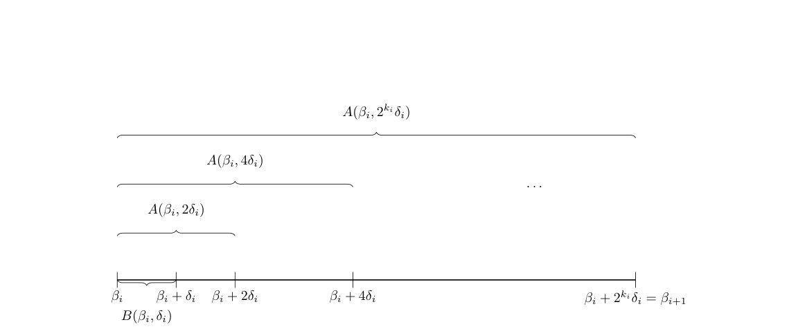
<figcaption class="paper-figure-caption"><b>Fig 1.</b> Figure 1: Recursive-doubling reconstruction on the schedule interval [βi, βi+1]. The base term B(βi, δi) gives the increment at the finest scale, while each term A(βi, 2jδi) supplies the correction required to double the reconstructed scale from 2j−1δi to 2jδi. The horizontal spacing is schematic.</figcaption>
</figure>
</div>

<p><strong>Summary.</strong> This paper presents quantum algorithms to estimate the log partition function of an $n$-qubit quantum Hamiltonian with Heisenberg scaling. By employing a recursive-doubling identity over a cooling schedule, the authors significantly improve query complexity by utilizing a coherent-temperature access model. This advances the field's ability to simulate equilibrium thermodynamics for quantum many-body systems.</p>
<p><strong>Why it may be interesting.</strong> This work provides a quantum computational tool to calculate fundamental thermodynamic quantities (free energy) for complex quantum many-body systems, which is crucial for simulating quantum materials and phase transitions.</p>
<details>
<summary>Detailed structure</summary>
<p><strong>Main problem.</strong> The paper addresses the challenge of estimating the log partition function, $f(eta) = \ln 	ext{Tr}(e^{-eta H})$, for an $n$-qubit quantum Hamiltonian $H$. The goal is to achieve Heisenberg scaling in the required quantum query complexity.</p>
<p><strong>Main result.</strong> The authors achieve an expected query complexity of $  ilde{O}(n/\epsilon)$ using a coherent-temperature access model, which is shown to be optimal up to polylogarithmic factors for block-encoding queries.</p>
<p><strong>Method.</strong> The estimation is achieved by decomposing the log partition function into a sum over a slowly-varying cooling schedule, utilizing recursive-doubling identities involving quantum overlaps and reweighting expectations.</p>
<p><strong>Model / system.</strong> The system is an $n$-qubit quantum system governed by a Hamiltonian $H$, where the estimation targets the free energy encoded in the partition function $Z(eta)$. The analysis considers block-encoding representations of $H$ and the use of thermofield-double states.</p>
<p><strong>Key observables.</strong> The primary observable is the log partition function, $f(eta)$. Other key quantities include the thermal state $
ho_H^eta$ and the overlaps between purified Gibbs states.</p>
<p><strong>Important parameters / regimes.</strong> The key parameters are the additive error $\epsilon$, the system size $n$, the maximum energy scale $h=O(n)$, and the inverse temperature $eta$. The scaling goal is Heisenberg scaling, $e^{O(1/\epsilon)}$.</p>
<p><strong>Assumptions / limitations.</strong> The analysis assumes the Hamiltonian $H$ is bounded ($0 \preceq H \preceq hI$) and relies on the ability to prepare thermofield-double states and perform controlled operations, particularly in the coherent access model.</p>
<p><strong>Paper structure.</strong> The paper establishes the problem of partition function estimation, develops the theoretical framework using recursive-doubling identities over cooling schedules, and compares the query complexity bounds achieved by fixed-temperature versus coherent-temperature access models, culminating in a proof of optimality for the latter.</p>
</details>
<details>
<summary>Abstract</summary>
<p>We give quantum algorithms that estimate the log partition function of an $n$-qubit quantum Hamiltonian to additive error $ε$ with Heisenberg scaling, while minimizing calls to thermal-state purification preparation. The input is a block encoding of $H$, unitaries preparing thermofield-double states at chosen inverse temperatures, with their inverses and controlled versions, and an adaptive slowly-varying cooling schedule. The system-size bounds below assume $0\preceq H\preceq hI$ with $h=O(n)$ and block-encoding normalization $α=Θ(h)$. For constant inverse temperature, we show that such a schedule of length $O(\sqrt n)$ always exists and can be generated from overlap estimates with $\widetilde O(\sqrt n)$ further preparations.   Given such a schedule and classically chosen temperatures, we estimate the log partition function with $\widetilde O(n^{5/4}/ε)$ expected calls to state preparation and to the block encoding, improving by $n^{1/4}$ on non-adaptive strategies. To achieve our result, we use a recursive-doubling identity that expresses each schedule increment as a weighted sum of logarithms of thermofield-double overlaps and of short imaginary-time steps implemented by quantum singular value transformation combined with previously developed variance reduction techniques. If thermofield doubles can be prepared controlled on a temperature register, a quantum inverse-binomial log estimator combined with quantum mean estimation reduces both query counts to $\widetilde O(n/ε)$. We show that the latter scaling is optimal in block-encoding queries up to polylogarithmic factors and discuss end-to-end complexities for one-dimensional partition-function estimation.</p>
</details>
<p><sub><a href="#top">↑ back to top</a></sub></p>

<p><a id="paper-2610.05624"></a></p>
<h3 id="onset-of-melting-in-finite-ion-crystals-the-role-of-structural-isomerization"><a href="http://arxiv.org/abs/2610.05624v1">Onset of Melting in Finite Ion Crystals: The Role of Structural Isomerization</a></h3>
<p><strong>Authors:</strong> Boris V. Pashinsky, Boris Blinov<br>
<strong>Type:</strong> theory · <strong>Category:</strong> statistical mechanics · <strong>PDF:</strong> <a href="https://arxiv.org/pdf/2610.05624v1">https://arxiv.org/pdf/2610.05624v1</a><br>
<strong>Analysis basis:</strong> full PDF text, analyzed in chunks
<strong>Topic relevance:</strong> <code>analog quantum simulation</code> <strong>3/5</strong> · <code>Frenkel-Kontorova</code> <strong>1/5</strong></p>
<div class="figure-strip-hint">↔ Scroll figures horizontally</div>
<div class="paper-figures-scroll">
<figure class="paper-figure-card">
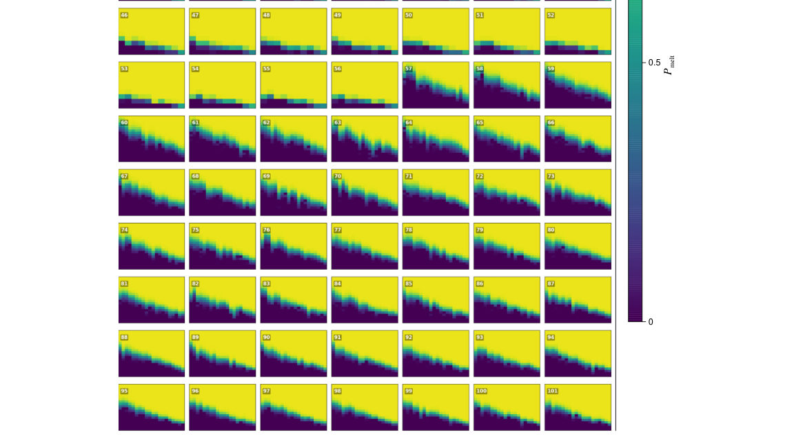
<figcaption class="paper-figure-caption"><b>Fig 1.</b> FIG. 1: Melting phase diagrams of finite two-dimensional Coulomb crystals containing 4 ≤N ≤101 ions. Each panel shows the melting probability Pmelt(T, γ) obtained from molecular-dynamics simulations for a fixed particle number N. The trap anisotropy varies in the range 0.5 ≤γ ≤1, where γ = 1 corresponds to the isotropic trap. For clarity, different temperature ranges are used for the two groups of particle numbers. For particle numbers 4 ≤N ≤56, the melting probabilities were evaluated at 10 uniformly spaced temperatures over the interval 0.01 ≤T ≤0.10. For 57 ≤N ≤101, the lower melting temperatures required a narrower and more finely resolved temperature grid consisting of 20 points over 0...</figcaption>
</figure>
<figure class="paper-figure-card">
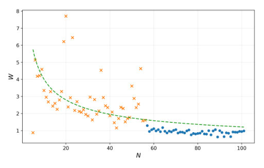
<figcaption class="paper-figure-caption"><b>Fig 2.</b> FIG. 2: Normalized melting-transition width W = (T90 −T10)/T50 as a function of ion number N at γ = 1. Here, Tp denotes the temperature at which the melting probability reaches Pmelt = p. Filled circles indicate cases in which all three threshold temperatures T10, T50, and T90 lie within the simulated temperature range, whereas crosses indicate cases in which at least one threshold temperature was obtained by linear extrapolation. The dashed curve shows the power-law dependence W ∝N −0.52. For N ≤56, the melting probabilities were evaluated at 10 uniformly spaced temperatures over 0.01 ≤T ≤0.10, whereas for N ≥57, 20 temperatures over 0 ≤T ≤0.04 were used.</figcaption>
</figure>
<figure class="paper-figure-card">
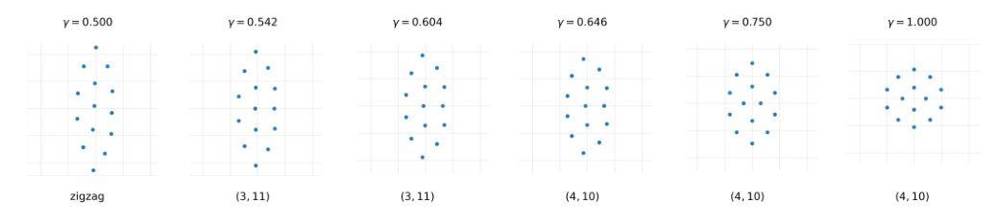
<figcaption class="paper-figure-caption"><b>Fig 3.</b> FIG. 3: Evolution of equilibrium configurations of a 14-ion crystal as the trap anisotropy is varied. The crystal undergoes a sequence of structural transitions from the zigzag configuration to the two-shell isomers (3, 11) and (4, 10). Within the coexistence interval both two-shell configurations are mechanically stable, corresponding to distinct local minima of the potential-energy landscape.</figcaption>
</figure>
<figure class="paper-figure-card">
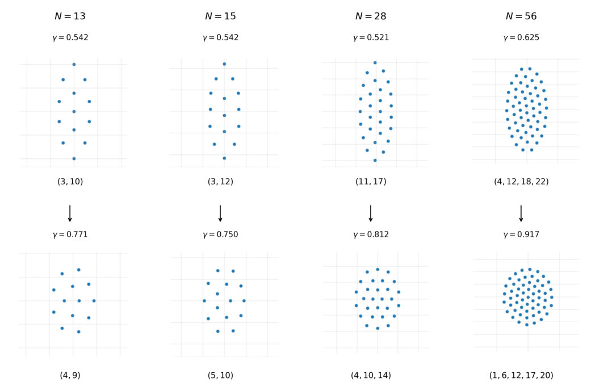
<figcaption class="paper-figure-caption"><b>Fig 4.</b> FIG. 4: Representative examples of structural isomerization for several crystal sizes. For identical external control parameters, more than one mechanically stable equilibrium configuration can exist. The coexistence of multiple structural isomers is therefore a generic property of finite two-dimensional Coulomb crystals.</figcaption>
</figure>
<figure class="paper-figure-card">
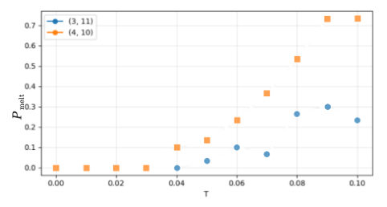
<figcaption class="paper-figure-caption"><b>Fig 5.</b> FIG. 5: Conditional melting probability for the two competing N = 14 isomers at γ = 0.63. The probability is evaluated separately for trajectories initialized in the (3, 11) and (4, 10) configurations. The two isomers exhibit substantially different thermal stability despite having the same particle number and trap anisotropy.</figcaption>
</figure>
</div>

<p><strong>Summary.</strong> This theoretical study explores how finite, trapped ion crystals undergo melting by examining the role of structural isomerization. Using molecular dynamics simulations, the authors show that the melting process is gradual and highly dependent on which metastable structural configuration the crystal occupies. This clarifies that structural rearrangements dictate the pathway of the phase transition in these confined quantum systems.</p>
<p><strong>Why it may be interesting.</strong> This work provides a detailed, microscopic picture of phase transitions in confined quantum systems, directly relevant to understanding the thermal stability and dynamics of trapped ion arrays, which are key platforms in AMO physics.</p>
<details>
<summary>Detailed structure</summary>
<p><strong>Main problem.</strong> The paper investigates the microscopic mechanism of melting in finite two-dimensional ion crystals, specifically focusing on how structural isomerization influences the melting pathways.</p>
<p><strong>Main result.</strong> Melting is a gradual, thermally-driven crossover characterized by the accumulation of radial and angular disorder, and the final melting behavior strongly depends on the metastable structural isomer the crystal initially occupies.</p>
<p><strong>Method.</strong> The study employs molecular dynamics (MD) simulations and Metropolis-Hastings equilibrium sampling to analyze thermal fluctuations and structural rearrangements.</p>
<p><strong>Model / system.</strong> The system is a finite two-dimensional ion crystal confined in an anisotropic harmonic trap, governed by Coulomb interactions. The analysis considers crystal sizes from N=4 to N=101 ions.</p>
<p><strong>Key observables.</strong> Melting probability (P_melt), radial fluctuations, angular disorder, Lindemann parameters, and the energy landscape associated with structural isomers.</p>
<p><strong>Important parameters / regimes.</strong> Ion number (N), trap anisotropy ($\gamma$), and temperature (T).</p>
<p><strong>Assumptions / limitations.</strong> The analysis treats the melting process as a finite-size crossover rather than a sharp thermodynamic phase transition, and it relies on classical molecular dynamics simulations.</p>
<p><strong>Figures summary.</strong> Figures illustrate melting phase diagrams (P_melt vs T, $\gamma$), the dependence of the melting transition width on N ($W(N) \propto N^{-0.52}$), and comparisons of thermal stabilities between different structural isomers for a fixed N.</p>
<p><strong>Paper structure.</strong> The paper systematically analyzes the melting transition by first establishing the dependence on N and $\gamma$, then introducing the concept of structural isomerism, and finally using detailed time-resolved diagnostics (radial/angular fluctuations) to distinguish the melting mechanism from simple soft-mode instabilities.</p>
</details>
<details>
<summary>Abstract</summary>
<p>We theoretically investigate the microscopic mechanism of melting in finite two-dimensional ion crystals confined in anisotropic traps. Building on our previous studies of melting probability as a function of temperature and anisotropy, we extend the analysis to crystal sizes ranging from $N=4$ to $N=101$ ions and examine how structural isomerization modifies the melting pathways. Using molecular dynamics simulations together with Metropolis-Hastings equilibrium sampling, we analyze radial fluctuations, angular disorder, Lindemann parameters, and isomer-dependent energy landscapes in these Coulomb crystals. We find that crystals with identical particle number and trap anisotropy can exhibit substantially different melting behavior depending on the metastable structural isomer they occupy. Contrary to a simple soft-mode instability picture, the observed melting process is characterized by a gradual thermally-driven accumulation of radial and angular disorder. Structural isomerization reshapes the fluctuation channels through which delocalization develops, leading to nonuniform melting probabilities across temperature and anisotropy space. These results provide a unified microscopic picture of melting in finite ion crystals and clarify the role of structural rearrangements in finite-size phase transitions.</p>
</details>
<p><sub><a href="#top">↑ back to top</a></sub></p>

<p><a id="paper-2610.04471"></a></p>
<h3 id="optimal-interferometer-geometry-for-gravitationally-induced-quantum-entanglement"><a href="http://arxiv.org/abs/2610.04471v1">Optimal Interferometer Geometry for Gravitationally Induced Quantum Entanglement</a></h3>
<p><strong>Authors:</strong> Alireza Maleki<br>
<strong>Type:</strong> theory · <strong>Category:</strong> other · <strong>PDF:</strong> <a href="https://arxiv.org/pdf/2610.04471v1">https://arxiv.org/pdf/2610.04471v1</a><br>
<strong>Analysis basis:</strong> full PDF text, analyzed in chunks
<strong>Topic relevance:</strong> <code>interference shaping light</code> <strong>3/5</strong> · <code>quantum measurements</code> <strong>1/5</strong></p>
<div class="figure-strip-hint">↔ Scroll figures horizontally</div>
<div class="paper-figures-scroll">
<figure class="paper-figure-card">
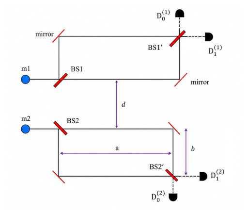
<figcaption class="paper-figure-caption"><b>Fig 1.</b> FIG. 1. Experimental setup for generating gravitationally induced quantum entanglement using two Mach-Zehnder in- terferometers for the massive particles.</figcaption>
</figure>
<figure class="paper-figure-card">
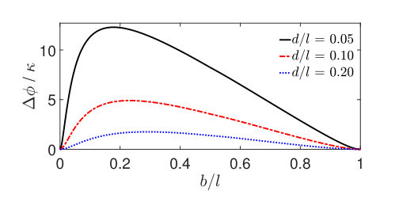
<figcaption class="paper-figure-caption"><b>Fig 2.</b> FIG. 2. The induced phase as a function of the relative ver- tical arm length, b/l. The phase is rescaled to the factor κ = Gm1m2/(ℏv). The separation between the two beam splitters is shown for three different values of d/l.</figcaption>
</figure>
<figure class="paper-figure-card">
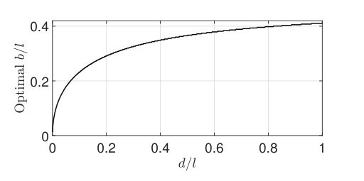
<figcaption class="paper-figure-caption"><b>Fig 3.</b> FIG. 3. The optimal vertical arm length as a function of the distance between the two interferometers. Both lengths are rescaled to the total path of the interferometers, l.</figcaption>
</figure>
<figure class="paper-figure-card">
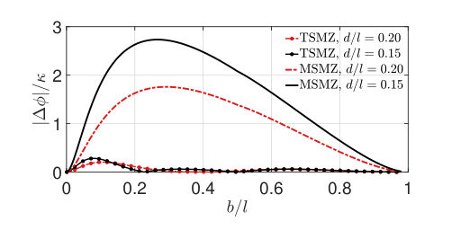
<figcaption class="paper-figure-caption"><b>Fig 4.</b> FIG. 4. Rescaled phase |∆ϕ|/κ vs. b/l for d/l = 0.20 (dash-dot) and d/l = 0.15 (solid). Curves with mark- ers: translation-symmetric Mach–Zehnder (TSMZ) setup of Ref. [19]. Curves without markers: mirror-symmetric Mach– Zehnder (MSMZ) setup analyzed here. The MSMZ configu- ration yields a larger phase, with the effect being stronger at smaller d/l.</figcaption>
</figure>
<figure class="paper-figure-card">
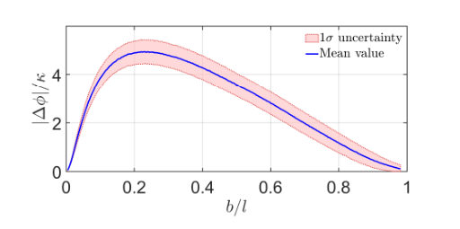
<figcaption class="paper-figure-caption"><b>Fig 5.</b> FIG. 5. Absolute rescaled gravitational phase |∆ϕ|/κ vs. ge- ometric ratio b/l. The solid curve shows the mean phase shift, and the red shaded area depicts the 1σ uncertainty band de- rived from 5% uncertainties in l and d. The absolute error is maximal at the signal peak, highlighting a fundamental trade-off between maximizing phase accumulation and main- taining tolerance to experimental uncertainties. Here we set d/l = 0.10.</figcaption>
</figure>
</div>

<p><strong>Summary.</strong> This theoretical paper proposes using quantum interferometry with two massive particles to detect quantum gravitational effects via entanglement. The authors demonstrate that the geometric design of the interferometer, particularly incorporating vertical path contributions, is crucial for maximizing the measurable entanglement. By optimizing the geometry, they significantly improve the prospects for experimentally testing quantum gravity.</p>
<p><strong>Why it may be interesting.</strong> This work provides a concrete, testable quantum optics proposal to probe quantum gravity effects, linking fundamental constants and geometry to measurable quantum correlations, which is highly relevant for quantum sensing and open quantum systems.</p>
<details>
<summary>Detailed structure</summary>
<p><strong>Main problem.</strong> The paper addresses the challenge of finding empirical evidence for quantum gravity by analyzing gravitationally induced quantum entanglement.</p>
<p><strong>Main result.</strong> Geometric optimization of the interferometer setup, specifically tuning the vertical path length ratio (b/l), can substantially enhance the measurable quantum entanglement generated by gravity.</p>
<p><strong>Method.</strong> The analysis uses a two-qubit framework, calculating entanglement using Concurrence and testing experimental feasibility via the violation of the CHSH Bell inequality.</p>
<p><strong>Model / system.</strong> The system involves two massive particles ($m_1, m_2$) traversing independent Mach-Zehnder interferometers. The interaction is modeled via a gravitational phase shift ($\phi_G$) within a two-qubit quantum state.</p>
<p><strong>Key observables.</strong> Quantum entanglement (measured by Concurrence or Bell parameter violation), and the gravitationally induced phase shift ($\Delta\phi$).</p>
<p><strong>Important parameters / regimes.</strong> The ratio of vertical path length to total path length ($b/l$), the separation between interferometers ($d/l$), and the gravitational coupling factor ($\kappa = Gm_1m_2 / (\hbar v)$).</p>
<p><strong>Assumptions / limitations.</strong> The primary assumption challenged is that standard approximations neglecting vertical path contributions ($b \ll l$) are invalid and severely limit predictive accuracy.</p>
<p><strong>Figures summary.</strong> Figures illustrate the optimal geometric tuning of $b/l$ versus $d/l$ to maximize the induced phase and entanglement, and compare the performance of different interferometer geometries (MSMZ vs TSMZ).</p>
<p><strong>Paper structure.</strong> The paper progresses from establishing the physical motivation (quantum gravity) to developing the theoretical framework using exact solutions for the phase shift, quantifying entanglement via Concurrence and Bell inequalities, and finally deriving optimal geometric parameters.</p>
</details>
<details>
<summary>Abstract</summary>
<p>The quest for a quantum theory of gravity remains a central challenge in modern physics, driven by the goal of unifying general relativity and quantum mechanics. Direct experimental access to quantum gravitational effects is notoriously difficult due to the inaccessibility of the Planck scale. Recent proposals, however, suggest that gravitationally induced quantum entanglement between two massive particles, realized through advanced quantum interferometric techniques, could provide empirical evidence for the quantum nature of gravity. We demonstrate that the geometrical configuration of an interferometer plays a decisive role in entanglement generation. Our analysis reveals that geometric optimization can substantially enhance the gravitationally induced phase shift, thereby improving the prospects for experimental detection of gravity-mediated entanglement. Moreover, we show that standard approximations employed in prior proposals may severely limit predictive accuracy and compromise experimental feasibility.</p>
</details>
<p><sub><a href="#top">↑ back to top</a></sub></p>

<p><a id="paper-2610.04393"></a></p>
<h3 id="structural-conditions-for-distributed-quantum-advantage"><a href="http://arxiv.org/abs/2610.04393v1">Structural Conditions for Distributed Quantum Advantage</a></h3>
<p><strong>Authors:</strong> Sabina Drăgoi, María Gragera Garcés, Lirandë Pira<br>
<strong>Type:</strong> both · <strong>Category:</strong> quantum information and computing · <strong>PDF:</strong> <a href="https://arxiv.org/pdf/2610.04393v1">https://arxiv.org/pdf/2610.04393v1</a><br>
<strong>Analysis basis:</strong> full PDF text, analyzed in chunks
<strong>Topic relevance:</strong> <code>QC/QI experiment</code> <strong>3/5</strong> · <code>quantum measurements</code> <strong>1/5</strong></p>
<div class="figure-strip-hint">↔ Scroll figures horizontally</div>
<div class="paper-figures-scroll">
<figure class="paper-figure-card">
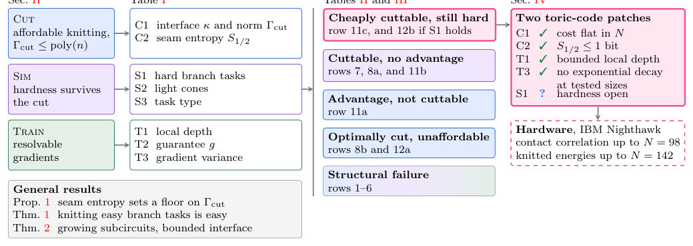
<figcaption class="paper-figure-caption"><b>Fig 1.</b> FIG. 1. How three requirements for distributed quantum advantage sort eighteen circuit families. The three requirements for distributed quantum advantage (left) become eight screening criteria, and three general results underpin the knitting and hardness criteria (bottom). Applied to eighteen circuit families, the criteria sort them into classes. Every class except the target is colored by the requirement it fails, with the structural failures shaded from Train to Cut, the two they fail, where a structural failure means a missing guarantee rather than a proven absence of advantage. Only the highlighted class combines a cheap cut with hardness inside a subcircuit, and it is the class that...</figcaption>
</figure>
<figure class="paper-figure-card">
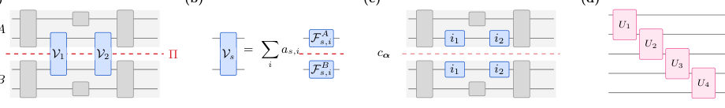
<figcaption class="paper-figure-caption"><b>Fig 2.</b> FIG. 2. Circuit cutting turns crossing gates into sums of local operations, and finite local depth bounds the blocks acting on each qubit. (a) A partition Π assigns the qubits of a circuit to two subcircuits A and B. Gates acting within one subcircuit (gray) are untouched, and the gates Vs that cross Π (blue) are removed. (b) Each crossing gate is written as a signed sum of products of operations local to A and to B, with real coefficients as,i. (c) A branch α = (i1, i2) chooses one term for every crossing gate (blue). The two subcircuits are then independent, and the original expectation value is the sum over branches weighted by cα = Q</figcaption>
</figure>
<figure class="paper-figure-card">
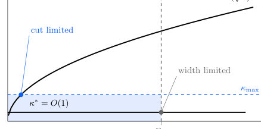
<figcaption class="paper-figure-caption"><b>Fig 3.</b> FIG. 3. A bounded interface leaves the affordable region only through the device width. The budget fixes a threshold κmax on the number of severed gates, independent of the circuit, while the circuit family fixes an interface curve κ∗(n), inde- pendent of the budget. The shaded region is both affordable and within device width. A bounded interface leaves it at nwidth, so hardware sets the reach. A growing interface leaves it through the budget threshold first unless the device width is reached earlier. The curves show minimum interfaces, whereas a heuristic search supplies upper bounds, and known gate angles should be assessed with the actual norm.</figcaption>
</figure>
<figure class="paper-figure-card">
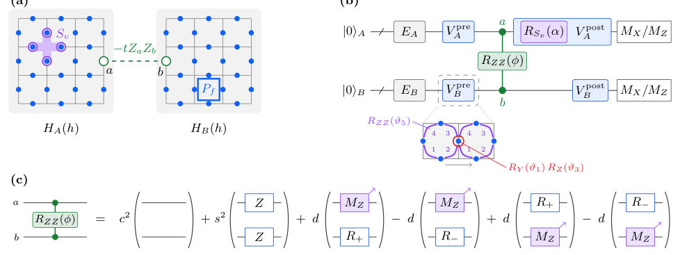
<figcaption class="paper-figure-caption"><b>Fig 4.</b> FIG. 4. Two toric-code patches joined by one variational gate, the sweeps that prepare their states, and the six branches that knit them. (a) Two open toric-code patches with spins on the edges (dots). A star Sv and a plaquette Pf are highlighted, and the only cross-patch term of the Hamiltonian couples the facing exterior spins a and b. (b) Circuit order. Fixed encoders Ep prepare the zero-field ground states, the prefix sweeps V pre p act before the bridge RZZ(ϕ), and the anchor rotation RSv(α) and the suffix sweeps act after it. The inset shows one sweep on two neighboring faces. In each face it applies a pair block to each of the four pairs of consecutive edges (arcs) in the order of...</figcaption>
</figure>
<figure class="paper-figure-card">
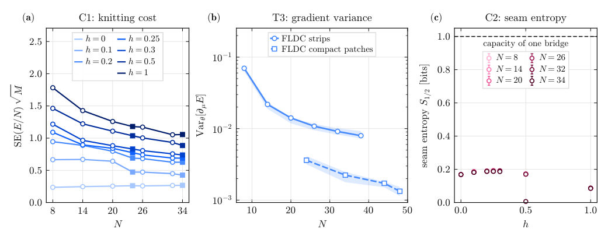
<figcaption class="paper-figure-caption"><b>Fig 5.</b> FIG. 5. In simulation, the single-bridge application passes the knitting and gradient checks. One criterion per panel, from classical simulations of the ideal circuits. (a) Knitting cost (C1), the bootstrap error of E/N times √</figcaption>
</figure>
</div>

<p><strong>Summary.</strong> This paper establishes rigorous structural criteria—affordable classical knitting, preserved computational hardness, and stable gradients—required for distributed quantum advantage. By analyzing these criteria and testing them on toric-code patches on real hardware, the authors identify finite local-depth circuits as a viable path forward for modular quantum computation.</p>
<p><strong>Why it may be interesting.</strong> The work directly addresses the practical limitations of scaling quantum computation by providing concrete, testable structural requirements for achieving advantage across modular hardware architectures.</p>
<details>
<summary>Detailed structure</summary>
<p><strong>Main problem.</strong> The paper determines the structural conditions necessary to achieve a 'distributed quantum advantage' when running quantum computations across multiple, physically separated processors.</p>
<p><strong>Main result.</strong> The authors identify Finite Local-Depth Circuits (FLDCs) with bounded interfaces as a promising architecture where the three necessary conditions—affordable knitting, classical hardness, and resolvable gradients—can coexist.</p>
<p><strong>Method.</strong> The methodology involves formulating three necessary screening criteria (Cut, Sim, Train) and applying them to various circuit families, supplemented by hardware experiments on toric-code patches.</p>
<p><strong>Model / system.</strong> The model is quantum computation distributed across multiple quantum chips, utilizing 'circuit cutting' to estimate expectation values from smaller subcircuits. The physical realization is tested on an IBM Nighthawk processor using field-perturbed toric-code patches.</p>
<p><strong>Key observables.</strong> Knitting cost ($\Gamma_{cut}$), gradient variance ($  ext{Var}[\partial_\mu C]$), and contact correlation across the cut interface.</p>
<p><strong>Important parameters / regimes.</strong> Bounded interface size, local depth ($\chi$), and the circuit size ($n$).</p>
<p><strong>Assumptions / limitations.</strong> The analysis assumes that the required hardness criterion ($S_1$) holds beyond the tested sizes, and the hardware results are limited by the one-parameter approximation used for signal correction.</p>
<p><strong>Figures summary.</strong> Figures illustrate circuit cutting processes, the decay of gradient variance with causal distance, and the comparison of raw vs. rescaled device energies showing signal retention.</p>
<p><strong>Paper structure.</strong> The paper first establishes the three necessary criteria for distributed advantage (Cut, Sim, Train). It then analyzes these criteria across circuit families, proposing FLDCs as a solution. Finally, it validates this framework through both theoretical analysis of gradient decay and experimental testing on superconducting qubits.</p>
</details>
<details>
<summary>Abstract</summary>
<p>Circuit cutting runs a quantum computation on processors smaller than the circuit, at the price of classical knitting whose cost grows exponentially with the number of cut gates. Keeping this cost affordable is necessary but not sufficient for an advantage, since knitting classically easy subcircuits is itself classically easy. We formulate three requirements for distributed quantum advantage under a stated budget: affordable knitting, classical difficulty that survives the cut, and, for variational circuits, resolvable gradients. We prove that under stated assumptions knitting stays affordable when subcircuits grow behind a bounded interface and becomes exponentially expensive when fixed-width subcircuits multiply. We turn the requirements into screening criteria and apply them to eighteen circuit families. We identify finite local-depth circuits with bounded interfaces as a setting in which the requirements can coexist, with hardness established only in the worst case. As a classically verifiable proof of principle, we knit one gate joining two field-perturbed toric-code patches on an IBM Nighthawk processor for up to 142 spins, and confirm that the reconstruction can at least resolve the contact correlation beyond independent execution for up to 98 qubits.</p>
</details>
<p><sub><a href="#top">↑ back to top</a></sub></p>

<p><a id="paper-2610.04855"></a></p>
<h3 id="superconducting-landscape-of-the-strongly-correlated-bilayer-hubbard-model"><a href="http://arxiv.org/abs/2610.04855v1">Superconducting landscape of the strongly correlated bilayer Hubbard model</a></h3>
<p><strong>Authors:</strong> Motoharu Kitatani, Yusuke Nomura, Shiro Sakai, Ryotaro Arita<br>
<strong>Type:</strong> theory · <strong>Category:</strong> strongly correlated electrons · <strong>PDF:</strong> <a href="https://arxiv.org/pdf/2610.04855v1">https://arxiv.org/pdf/2610.04855v1</a><br>
<strong>Analysis basis:</strong> full PDF text, analyzed in chunks
<strong>Topic relevance:</strong> <code>Keldysh / 2PI / non-Gaussian methods</code> <strong>3/5</strong> · <code>analog quantum simulation</code> <strong>1/5</strong></p>
<div class="figure-strip-hint">↔ Scroll figures horizontally</div>
<div class="paper-figures-scroll">
<figure class="paper-figure-card">
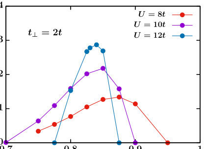
<figcaption class="paper-figure-caption"><b>Fig 1.</b> FIG. 1. Superconducting phase diagram (Tc vs filling) of the bilayer Hubbard model for U = 8t, 10t, 12t, with t′ = t′′ = 0 and t⊥= 2t.</figcaption>
</figure>
<figure class="paper-figure-card">
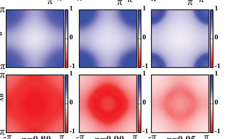
<figcaption class="paper-figure-caption"><b>Fig 2.</b> FIG. 3. (a) Pairing interaction for interband scattering Γppinter, evaluated at the lowest fermionic Matsubara fre- quencies and zero bosonic transfer frequency in the spin- fluctuation channel, for U = 8t, t⊥= 2t, t′ = t′′ = 0, and T = 0.04t. Each column corresponds to the filling n = 0.80, 0.90, and 0.95. (b,c) Bonding and antibonding components (∆B and ∆AB, respectively) of the eigenvector corresponding to the leading eigenvalue (λSC = 0.56, 0.62, and 0.26, from left to right) of the linearized Eliashberg equation for the same parameters as in (a). Eigenvectors are shown at the lowest positive Matsubara frequency, and normalized by their max- imum absolute value for each filling.</figcaption>
</figure>
<figure class="paper-figure-card">
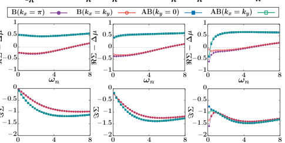
<figcaption class="paper-figure-caption"><b>Fig 3.</b> FIG. 2. Filling dependence (n = 0.80, 0.90, 0.95) of the spec- trum (−βG(τ = β/2)/π) and the self-energy for U = 8t, t⊥= 2t, t′ = t′′ = 0, and T = 0.04t. Here, ∆µ denotes the differ- ence in chemical potential between interacting (U = 8t) and non-interacting (U = 0) systems.</figcaption>
</figure>
<figure class="paper-figure-card">
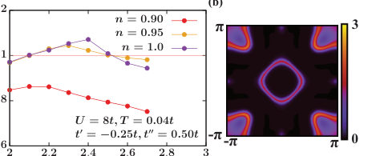
<figcaption class="paper-figure-caption"><b>Fig 4.</b> FIG. 5. (a) Superconducting eigenvalue λSC as a function of t⊥for n = 0.90, 0.95, 1.0. (b) Spectrum with warped Fermi surface (−βG(τ = β/2)/π) for n = 0.95 and t⊥= 2.5t. Pa- rameters are U = 8t, t′ = −0.25t, t′′ = 0.50t, and T = 0.04t.</figcaption>
</figure>
<figure class="paper-figure-card">
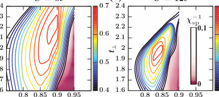
<figcaption class="paper-figure-caption"><b>Fig 5.</b> FIG. 4. Filling and t⊥dependence of the superconducting eigenvalue λSC (contours) and antiferromagnetic susceptibil- ity χsp(Qmax, ω = 0) for (a) U = 8t and (b) U = 12t with t′ = t′′ = 0 and T = 0.04t, where Qmax is the wave vector at which the static spin susceptibility is maximal.</figcaption>
</figure>
</div>

<p><strong>Summary.</strong> This work maps the superconducting phase diagram of the bilayer Hubbard model, showing that optimal superconductivity occurs at intermediate interlayer coupling and doping. The authors demonstrate that strong correlations suppress $T_c$ near half-filling by reducing low-energy spectral weight, suggesting that modifying the Fermi surface geometry via longer-range hopping can enhance pairing.</p>
<p><strong>Why it may be interesting.</strong> The detailed study of how correlation-induced spectral weight suppression limits $T_c$ provides a rich theoretical framework relevant to understanding pairing mechanisms in high-temperature superconductors, which is a core area of condensed matter theory.</p>
<details>
<summary>Detailed structure</summary>
<p><strong>Main problem.</strong> The study investigates how repulsive interactions drive superconductivity in a coupled, strongly correlated bilayer Hubbard model, and how external parameters control this superconducting state.</p>
<p><strong>Main result.</strong> Superconductivity is optimized at intermediate interlayer hopping and moderate doping, exhibiting an $s_{\pm}$-wave gap; however, strong self-energy effects suppress $T_c$ near half-filling.</p>
<p><strong>Method.</strong> The research employs advanced theoretical techniques, primarily the Dynamical Vertex Approximation (D$\Gamma$A) and comparison with the Fluctuation Exchange (FLEX) approximation, to solve the linearized gap equation.</p>
<p><strong>Model / system.</strong> The system is the strongly correlated bilayer Hubbard model on a square lattice, described by a Hamiltonian including onsite repulsion ($U$) and interlayer hopping ($t_\perp$). The physics is analyzed by treating layer degrees of freedom via pseudo momentum $k_z$.</p>
<p><strong>Key observables.</strong> Superconducting transition temperature ($T_c$), superconducting eigenvalue ($\lambda_{SC}$), low-energy spectral weight, and the real/imaginary parts of the self-energy ($\Sigma$).</p>
<p><strong>Important parameters / regimes.</strong> Filling ($n$), interlayer hopping ($t_\perp$), and interaction strength ($U/t$). Optimal regimes are found at intermediate $t_\perp$ and moderate doping.</p>
<p><strong>Assumptions / limitations.</strong> The analysis relies on approximations like D$\Gamma$A and FLEX, which are used to capture strong correlations and nonlocal fluctuations. A key assumption is that the superconducting pairing is governed by the interplay between these correlation effects.</p>
<p><strong>Figures summary.</strong> Figures illustrate the superconducting phase diagram ($T_c$ vs. filling), momentum-space maps showing spectral weight suppression near half-filling, and comparisons of $\lambda_{SC}$ across different theoretical approximations and temperature regimes.</p>
<p><strong>Paper structure.</strong> The paper systematically analyzes the superconducting landscape by first establishing the optimal doping/hopping regime, then detailing the mechanism of $T_c$ suppression near half-filling due to self-energy effects, and finally proposing that longer-range hoppings can mitigate this suppression.</p>
</details>
<details>
<summary>Abstract</summary>
<p>Coupling two strongly correlated layers opens a distinct route to repulsion-driven superconductivity. Yet the same interlayer coupling makes the optimization of superconductivity highly nontrivial. Using the dynamical vertex approximation, we determine the superconducting landscape in the enlarged parameter space spanned by filling and interlayer hopping. We identify an optimal regime at intermediate interlayer hopping and moderate doping away from half filling, where the system exhibits high superconducting transition temperatures ($T_{\rm c}$) with an interband $s_{\pm}$-wave gap structure. Toward half filling, however, strong self-energy effects can suppress the superconducting tendency by reducing the low-energy spectral weight. We further show that a Fermi-surface distortion induced by longer-range hoppings can weaken this suppression and enhance $T_{\rm c}$. Our results establish how filling, interlayer hopping, and Fermi-surface geometry jointly optimize the superconducting regime in the strongly correlated bilayer Hubbard model.</p>
</details>
<p><sub><a href="#top">↑ back to top</a></sub></p>

<p><a id="paper-2610.04513"></a></p>
<h3 id="symmetry-resolved-entanglement-in-schwinger-pair-production"><a href="http://arxiv.org/abs/2610.04513v1">Symmetry resolved entanglement in Schwinger pair production</a></h3>
<p><strong>Authors:</strong> Wajid Joyia, S. M. Al-Marzoug, Amaria Javed<br>
<strong>Type:</strong> theory · <strong>Category:</strong> other · <strong>PDF:</strong> <a href="https://arxiv.org/pdf/2610.04513v1">https://arxiv.org/pdf/2610.04513v1</a><br>
<strong>Analysis basis:</strong> full PDF text, analyzed in chunks
<strong>Topic relevance:</strong> <code>Keldysh / 2PI / non-Gaussian methods</code> <strong>3/5</strong> · <code>methods for driven-dissipative</code> <strong>1/5</strong></p>
<div class="figure-strip-hint">↔ Scroll figures horizontally</div>
<div class="paper-figures-scroll">
<figure class="paper-figure-card">
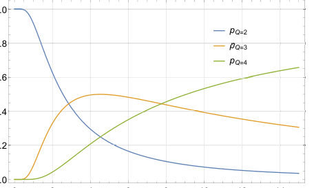
<figcaption class="paper-figure-caption"><b>Fig 1.</b> Fig. 1: (a) Total symmetry resolved entanglement en- tropy S = Sconfig + Snum of ρp,q as a function of the dimensionless field strength eE0/(p2 ⊥+ m2), for ε = 1/ √</figcaption>
</figure>
<figure class="paper-figure-card">
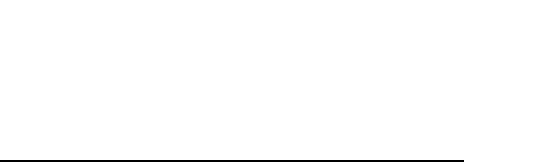
<figcaption class="paper-figure-caption"><b>Fig 2.</b> Figure 2(b) shows the sector probabilities. The mid- dle sector dominates: pQ=1 = |α|4 + |β|4 falls from unity at zero field to its minimum 1 2 at the critical field |β|2 = 1</figcaption>
</figure>
<figure class="paper-figure-card">
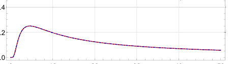
<figcaption class="paper-figure-caption"><b>Fig 3.</b> Fig. 2: (a) Total symmetry resolved entanglement en- tropy S = Sconfig + Snum of ρp,−q, resolved by the physical charge Q = np −n−q, as a function of the dimensionless field strength eE0/(p2 ⊥+ m2), for ε = 1/ √</figcaption>
</figure>
<figure class="paper-figure-card">
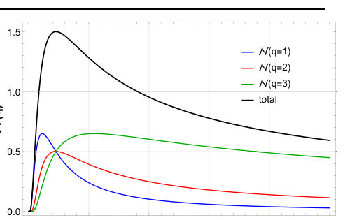
<figcaption class="paper-figure-caption"><b>Fig 4.</b> Fig. 4: Symmetry resolved negativity of the vacuum pair ρk,−k as a function of the dimensionless field strength eE0/(k2 ⊥+m2). The coloured curves are the re- solved negativities of the imbalance sectors, N(q=1) = 2|α|3|β|, N(q=2) = 2|α|2|β|2, and N(q=3) = 2|α||β|3, with the imbalance charge q = QA −QB = nk + ¯n−k; the black curve is their sum, the total negativity N. The empty sectors q = 0 and q = 4 carry no negativity.</figcaption>
</figure>
<figure class="paper-figure-card">
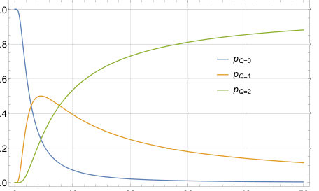
<figcaption class="paper-figure-caption"><b>Fig 5.</b> Fig. 3: (a) Total symmetry resolved entanglement en- tropy S = Sconfig + Snum of the vacuum pair ρk,−k as a function of the dimensionless field strength eE0/(k2 ⊥+ m2). The curve is independent of ε; it vanishes at zero field, decreases towards zero as E0 →∞, and attains its maximum value of 2 at the critical field |β|2 = 1 2. (b) The corresponding charge sector prob- abilities pQ=0 = |α|4, pQ=1 = 2|α|2|β|2, pQ=2 = |β|4 for the mode charge Q = nk = 0, 1, 2.</figcaption>
</figure>
</div>

<p><strong>Summary.</strong> This paper investigates how entanglement is structured during Schwinger pair production in a constant electric field by resolving entanglement according to the conserved electric charge. Using symmetry-resolved entropy and negativity, the authors show that the field primarily redistributes existing entanglement across charge sectors rather than creating it uniformly. This technique provides detailed information about the location and movement of quantum correlations in charge space.</p>
<p><strong>Why it may be interesting.</strong> This work provides a sophisticated tool (symmetry resolution) to dissect entanglement in non-perturbative quantum field processes, offering insights into how fundamental symmetries constrain quantum correlations in extreme physical environments.</p>
<details>
<summary>Detailed structure</summary>
<p><strong>Main problem.</strong> The study focuses on characterizing the charge-resolved structure of pairwise mode entanglement generated by the Schwinger effect in quantum electrodynamics.</p>
<p><strong>Main result.</strong> Symmetry resolution reveals that the electric field primarily redistributes entanglement across different charge sectors rather than creating it globally, and the vacuum pair negativity is shown to transport across charge imbalance sectors.</p>
<p><strong>Method.</strong> The authors employ symmetry-resolved entanglement entropy ($S_Q$) for pure states and charge imbalance resolved negativity ($N(q)$) for mixed states, utilizing the $U(1)$ charge conservation symmetry.</p>
<p><strong>Model / system.</strong> The system is Quantum Electrodynamics (QED) subjected to a constant, uniform electric field ($E_0$). The analysis models pair production from the vacuum, considering reduced density matrices for various mode pairings (particle-particle, antiparticle-antiparticle, particle-antiparticle).</p>
<p><strong>Key observables.</strong> Symmetry-resolved entanglement entropy ($S_Q$), charge imbalance resolved negativity ($N(q)$), and sector probabilities ($p_Q$).</p>
<p><strong>Important parameters / regimes.</strong> The pair production probability $|eta|^2 = e^{-\pi\mu}$, where $\mu$ depends on the field strength $E_0$.</p>
<p><strong>Assumptions / limitations.</strong> The analysis is restricted to the case of a constant electric field; the results are derived using the $U(1)$ charge conservation symmetry.</p>
<p><strong>Figures summary.</strong> Figures illustrate the total symmetry-resolved entanglement entropy and sector probabilities for different pair types (e.g., vacuum pair $
ho_{k,-k}$), showing field dependence peaking at critical values.</p>
<p><strong>Paper structure.</strong> The paper systematically analyzes entanglement measures for different reduced states ($
ho_{p,q}$, $
ho_{-p,-q}$, $
ho_{p,-q}$, $
ho_{k,-k}$), comparing entropy and negativity, and demonstrating how charge resolution refines the understanding of field-induced entanglement dynamics.</p>
</details>
<details>
<summary>Abstract</summary>
<p>We study the charge resolved structure of the pairwise mode entanglement produced by the Schwinger effect. Using the $U(1)$ electric charge of quantum electrodynamics, we decompose the entanglement of the reduced density matrices of momentum modes into individual charge sectors, applying the symmetry resolved entanglement entropy to the pure bipartition reductions and the charge imbalance resolved negativity to the mixed particle-antiparticle pair. For a constant electric field we obtain closed form results for every mode pairing, with all field dependence controlled by the single pair production probability $|β|^2=e^{-πμ}$. For the particle, particle and antiparticle antiparticle pairs the entanglement entropy within each charge sector is field independent, so that the field acts only by redistributing statistical weight among the sectors; for the mixed particle antiparticle pair the populated sector additionally carries a field dependent entropy. The vacuum created pair is the richest case: its resolved negativity is distributed over three imbalance sectors and is transported from one sector to the next as the field increases, the sectors contributing equally only at the critical field. The entanglement across a fixed momentum bipartition, by contrast, is frozen at its initial value because pair creation conserves the sector charge. Symmetry resolution thus refines the total entanglement measures into a sector resolved picture, exposing where in charge space the entanglement of the Schwinger mechanism resides and how the electric field moves it, information beyond that contained in the total measures or in particle number distributions.</p>
</details>
<p><sub><a href="#top">↑ back to top</a></sub></p>

<p><a id="paper-2610.04359"></a></p>
<h3 id="a-cheat-sensitive-primitive-for-destination-private-quantum-routing"><a href="http://arxiv.org/abs/2610.04359v1">A Cheat-Sensitive Primitive for Destination-Private Quantum Routing</a></h3>
<p><strong>Authors:</strong> S. F. E. Oliviero, S. Onofri, V. Giovannetti<br>
<strong>Type:</strong> theory · <strong>Category:</strong> quantum information and computing · <strong>PDF:</strong> <a href="https://arxiv.org/pdf/2610.04359v1">https://arxiv.org/pdf/2610.04359v1</a><br>
<strong>Analysis basis:</strong> full PDF text, analyzed in chunks
<strong>Topic relevance:</strong> <code>quantum measurements</code> <strong>3/5</strong></p>
<div class="figure-strip-hint">↔ Scroll figures horizontally</div>
<div class="paper-figures-scroll">
<figure class="paper-figure-card">
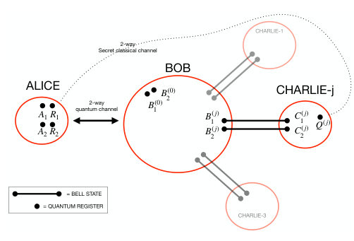
<figcaption class="paper-figure-caption"><b>Fig 1.</b> FIG. 1. Star-network implementation of the two-call rout- ing primitive. Bob holds two ports B(k) 1 , B(k) 2 entangled with clients C(k) 1 , C(k) 2 at each Charlie-k, together with dummy ports B(0) 1 , B(0) 2 . The user Alice sends address–payload pairs (As, Rs) sequentially. The selected Charlie-j holds a private matching qubit Q(j) and communicates with Alice through a private classical channel. The unselected clients and their links are omitted from the active part of the diagram but re- main part of the network.</figcaption>
</figure>
</div>

<p><strong>Summary.</strong> This paper introduces a minimal two-call quantum routing primitive designed to test for eavesdropping on the destination address in quantum networks. By combining a direct request with a coherent 'trap' call, the protocol achieves a cheat-sensitive test that detects reading attacks. The work establishes strong privacy guarantees in the perfect-pass limit, advancing the theory of secure quantum communication.</p>
<p><strong>Why it may be interesting.</strong> While focused on quantum networking primitives, the rigorous analysis of information leakage and privacy guarantees in a controlled quantum channel setting provides foundational theoretical tools applicable to understanding information flow in complex quantum systems.</p>
<details>
<summary>Detailed structure</summary>
<p><strong>Main problem.</strong> To develop a minimal quantum routing primitive that allows a user to establish an entangled link while simultaneously testing whether an intermediate provider has read the destination address.</p>
<p><strong>Main result.</strong> The protocol is shown to be 'cheat-sensitive,' detecting explicit destination-reading attacks with non-zero probability, and achieving destination privacy in the 'perfect-pass limit.'</p>
<p><strong>Method.</strong> The methodology adapts the hidden-order mechanism from Quantum Private Queries, utilizing a two-call structure involving a direct request and a coherent superposition 'trap' call.</p>
<p><strong>Model / system.</strong> The model is a star-network quantum routing setup involving a user (Alice), a provider (Bob), and multiple clients. It relies on shared entangled singlets and private matching qubits held by the clients.</p>
<p><strong>Key observables.</strong> Detection probability of an attack, Bob's residual state, and the state's dependence on the destination address $j$.</p>
<p><strong>Important parameters / regimes.</strong> The protocol is limited to a two-call primitive, and the analysis characterizes the 'perfect-pass limit' where the residual state is independent of the destination.</p>
<p><strong>Assumptions / limitations.</strong> The claim is deliberately limited; it does not provide a quantitative information-disturbance tradeoff or composable security. The perfect-pass limit assumes ideal initial singlets and exact direct functionality.</p>
<p><strong>Figures summary.</strong> Figure 1 illustrates the star-network implementation, detailing the roles of Alice, Bob, the clients, the singlets, and the private matching qubit $Q(j)$.</p>
<p><strong>Paper structure.</strong> The paper progresses by defining the two-call protocol, analyzing the state evolution after favorable Bell outcomes, deriving the detection probability for attacks, and finally proving the strong privacy guarantee by showing the residual state is destination-independent in the perfect-pass limit.</p>
</details>
<details>
<summary>Abstract</summary>
<p>Quantum networks will rely on intermediate nodes to distribute entanglement, but the same nodes may learn which users are being connected. We introduce a minimal two-call routing primitive in which a user, Alice, establishes an entangled link with one of several clients while testing whether the provider, Bob, has disturbed a coherently encoded request. The construction adapts the hidden-order mechanism of quantum private queries: one call contains a direct request, the other a coherent superposition of the desired and null addresses, and Alice keeps their order secret. A private matching qubit held by the selected client restores the coherent test state after a favorable Bell-measurement outcome, so that Alice can test the returned query without any further operation by Bob. The claim is deliberately limited. The protocol shows that a routing request can carry a physical cheating test, and it detects an explicit destination-reading attack with nonzero probability. It does not yet provide a quantitative information-disturbance tradeoff, composable security, or certification of an unmeasured output against arbitrary attacks. We also characterize the exact perfect-pass limit, in which Bob's residual state, averaged over the private matching states, is independent of the destination.</p>
</details>
<p><sub><a href="#top">↑ back to top</a></sub></p>

<p><a id="paper-2610.06723"></a></p>
<h3 id="approximate-cloning-of-structured-pure-states"><a href="http://arxiv.org/abs/2610.06723v1">Approximate cloning of structured pure states</a></h3>
<p><strong>Authors:</strong> Yaroslav Herasymenko, Junqiao Lin, Philip Verduyn Lunel, Dmitry Grinko<br>
<strong>Type:</strong> theory · <strong>Category:</strong> quantum information and computing · <strong>PDF:</strong> <a href="https://arxiv.org/pdf/2610.06723v1">https://arxiv.org/pdf/2610.06723v1</a><br>
<strong>Analysis basis:</strong> full PDF text, analyzed in chunks
<strong>Topic relevance:</strong> <code>analog quantum simulation</code> <strong>3/5</strong></p>
<div class="figure-strip-hint">↔ Scroll figures horizontally</div>
<div class="paper-figures-scroll">
<figure class="paper-figure-card">
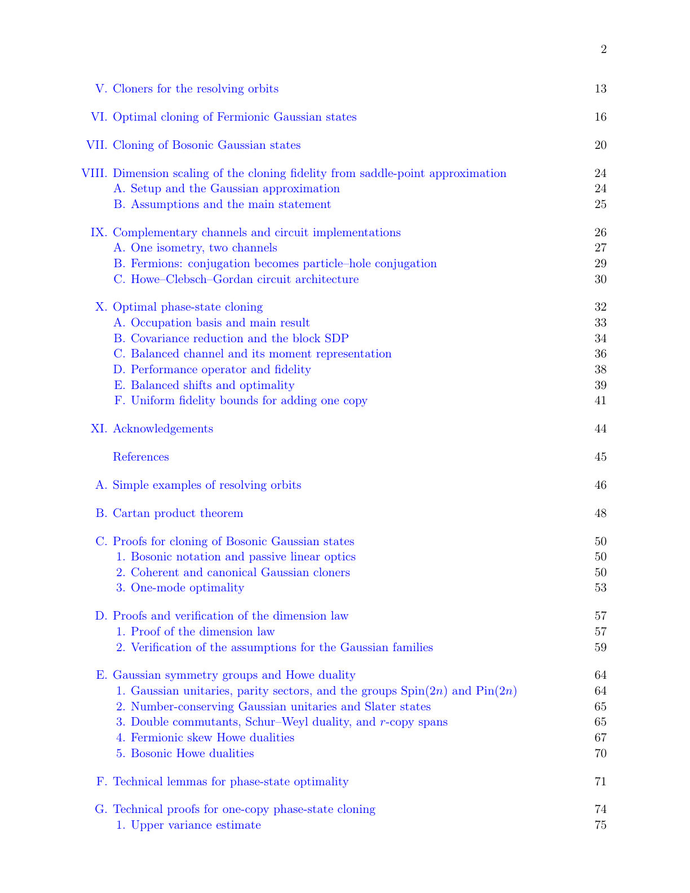
<figcaption class="paper-figure-caption"><b>Fig 1.</b> Low-resolution page preview, page 2</figcaption>
</figure>
<figure class="paper-figure-card">
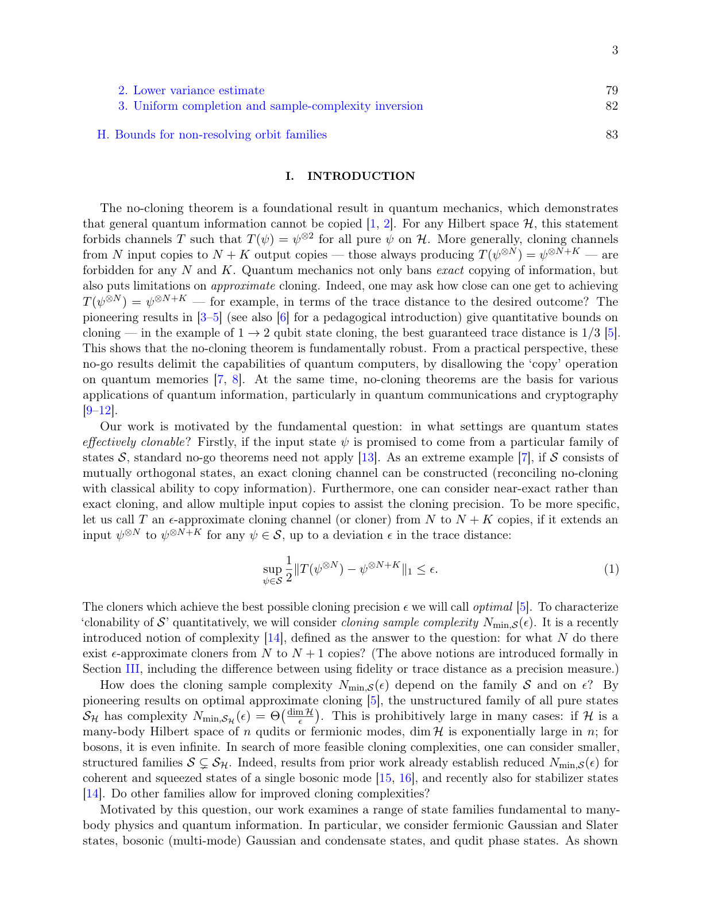
<figcaption class="paper-figure-caption"><b>Fig 2.</b> Low-resolution page preview, page 3</figcaption>
</figure>
<figure class="paper-figure-card">
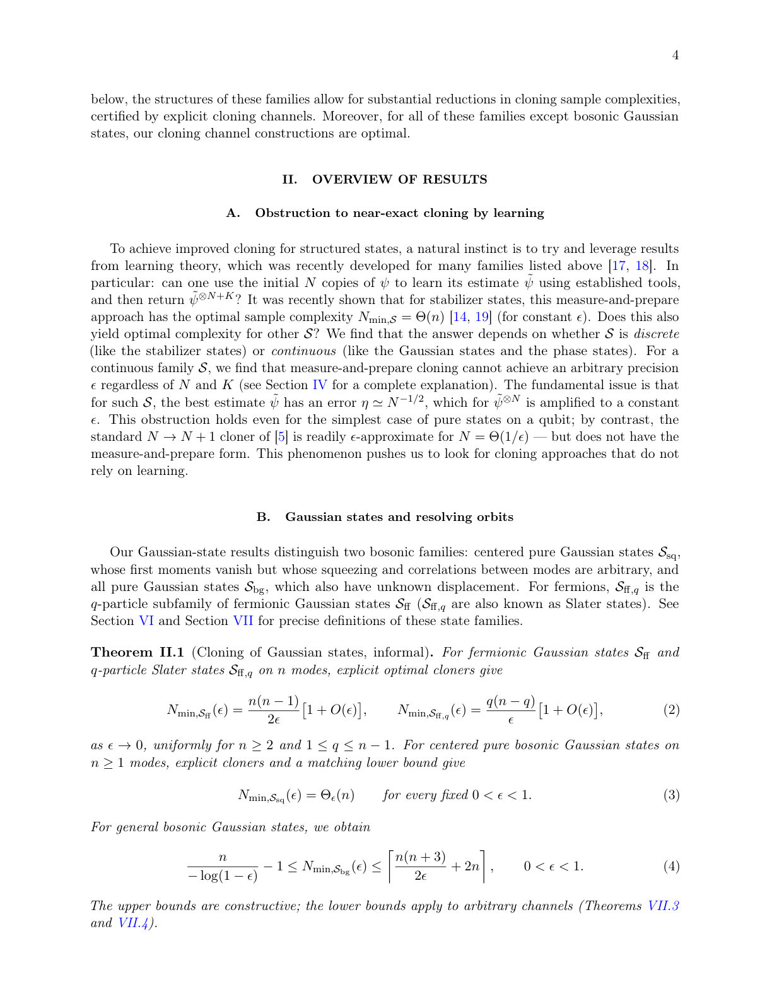
<figcaption class="paper-figure-caption"><b>Fig 3.</b> Low-resolution page preview, page 4</figcaption>
</figure>
<figure class="paper-figure-card">
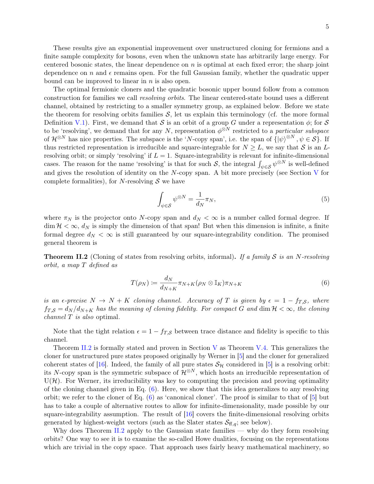
<figcaption class="paper-figure-caption"><b>Fig 4.</b> Low-resolution page preview, page 5</figcaption>
</figure>
<figure class="paper-figure-card">
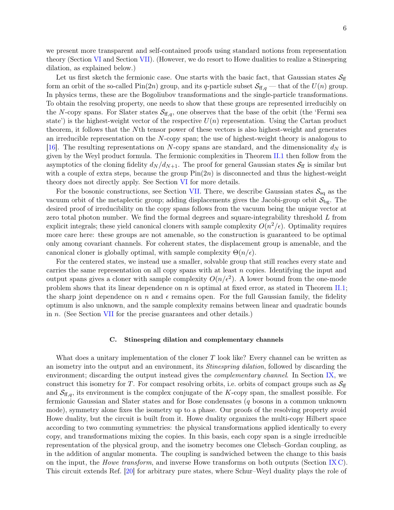
<figcaption class="paper-figure-caption"><b>Fig 5.</b> Low-resolution page preview, page 6</figcaption>
</figure>
</div>

<p><strong>Summary.</strong> This work tackles the quantum state cloning problem by analyzing the minimum number of copies needed when the state is restricted to structured families like Gaussian states. It develops a unifying mathematical framework to show that for these structured systems, the required resources scale polynomially with system size, offering significant theoretical improvements over general quantum state cloning bounds.</p>
<p><strong>Why it may be interesting.</strong> The results provide concrete, polynomial scaling laws for cloning structured quantum states, which is crucial for understanding the resource requirements in quantum simulation and quantum information processing involving structured many-body systems.</p>
<details>
<summary>Detailed structure</summary>
<p><strong>Main problem.</strong> The paper investigates the sample complexity required for approximate quantum state cloning when the input state is restricted to a structured family, contrasting this with the exponentially large complexity for general states.</p>
<p><strong>Main result.</strong> For structured families like fermionic and bosonic Gaussian states, the required sample complexity scales polynomially (or linearly) with the number of modes ($n$), showing significant improvements over unstructured cloning bounds.</p>
<p><strong>Method.</strong> The authors construct optimal cloning channels using a single representation-theoretic framework and employ controlled saddle-point evaluations of the frame potential to derive scaling laws.</p>
<p><strong>Model / system.</strong> The analysis covers various structured pure states fundamental to many-body physics, including $n$-mode fermionic Gaussian/Slater states and $n$-mode bosonic Gaussian states.</p>
<p><strong>Key observables.</strong> Cloning fidelity (or trace-distance error $\epsilon$) and the minimum sample complexity $N_{\min,S}(\epsilon)$.</p>
<p><strong>Important parameters / regimes.</strong> Number of modes ($n$), error tolerance ($\epsilon$), and the dimension of the state manifold ($\dim S$).</p>
<p><strong>Assumptions / limitations.</strong> The analysis relies on the input state belonging to a specific, structured family (e.g., Gaussian states) and uses approximations like the saddle-point method for high $N$.</p>
<p><strong>Paper structure.</strong> The paper progresses by first establishing the general problem of sample complexity for cloning, then developing a unified representation-theoretic framework, and finally applying this framework to derive specific, improved scaling laws for fermionic and bosonic Gaussian states.</p>
</details>
<details>
<summary>Abstract</summary>
<p>The no-cloning theorem is a cornerstone result in quantum mechanics that forbids copying of general quantum information. More quantitatively, even given $N$ copies of an unknown state, any channel producing an $(N+1)$-copy state incurs a nonzero trace-distance error on some inputs. Turning this around, one can ask about the sample complexity of approximate $N\rightarrow N+1$ cloning: for a desired small error $ε$, what $N$ suffices? For arbitrary pure states on a Hilbert space $H$, the answer is $N\simeq \dim H/ε$ - astronomically large for most $H$ of interest. What if the input is promised to lie in a structured family? We examine a range of families fundamental to many-body physics and quantum information: $n$-mode fermionic Gaussian and Slater states, $n$-mode bosonic Gaussian states, and qudit phase states. For fermions, we construct optimal cloning channels, reducing the complexity from exponential to polynomial in $n$. For bosonic Gaussian states, we construct an explicit cloner that certifies polynomial complexity, without any constraint on the energy of the state; this channel, however, is not optimal in general. The fermionic and bosonic results follow from a single representation-theoretic framework, which generalizes previous work by Werner and by Chiribella and Yang; it also yields the cloners' unitary implementation. Furthermore, we explain why for many families the cloning complexity is linear in the dimension of the family manifold, via a controlled saddle-point evaluation of the frame potential at high $N$. The same calculation accounts for the analogous scaling of tomography complexity. The above framework does not cover phase states; for these we give an independent construction of a channel with optimal cloning fidelity. Our work complements recent results on cloning stabilizer states.</p>
</details>
<p><sub><a href="#top">↑ back to top</a></sub></p>

<p><a id="paper-2610.06722"></a></p>
<h3 id="certifying-measurement-incompatibility-under-bounded-classical-communication"><a href="http://arxiv.org/abs/2610.06722v1">Certifying Measurement Incompatibility under Bounded Classical Communication</a></h3>
<p><strong>Authors:</strong> Oxana Shaya<br>
<strong>Type:</strong> theory · <strong>Category:</strong> quantum information and computing · <strong>PDF:</strong> <a href="https://arxiv.org/pdf/2610.06722v1">https://arxiv.org/pdf/2610.06722v1</a><br>
<strong>Analysis basis:</strong> full PDF text, analyzed in chunks
<strong>Topic relevance:</strong> <code>quantum measurements</code> <strong>3/5</strong></p>
<div class="figure-strip-hint">↔ Scroll figures horizontally</div>
<div class="paper-figures-scroll">
<figure class="paper-figure-card">
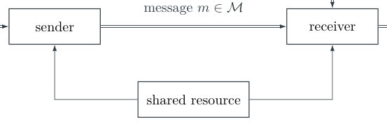
<figcaption class="paper-figure-caption"><b>Fig 1.</b> Figure 1: Communication scenario. The inputs x and y are independent of each other and of the shared resource. The receiver chooses y and obtains b after receiving the message m. Double lines carry classical information. The message may be public and is the only communication. For k fixed-length bits, |M| ≤2k.</figcaption>
</figure>
<figure class="paper-figure-card">
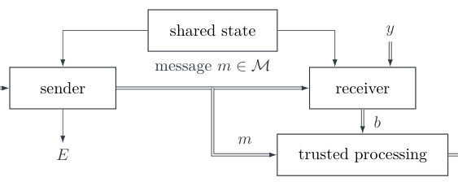
<figcaption class="paper-figure-caption"><b>Fig 2.</b> Figure 2: Private randomness with a public incoming message. The input y is chosen after m is fixed. The controller records a copy of m, collects b privately, and extracts K after testing the statistics. The system E contains the sender’s residual and external quantum information. During data generation, there is no return communication to the sender. Double lines carry classical information.</figcaption>
</figure>
</div>

<p><strong>Summary.</strong> This work develops a powerful tool, 'union maximal leakage,' to certify measurement incompatibility in quantum communication settings, even when classical communication is involved. By comparing this leakage to classical communication bounds, the authors establish necessary and sufficient conditions for quantum advantages like entanglement and private randomness. It provides a rigorous information-theoretic framework for testing the non-classical nature of quantum correlations.</p>
<p><strong>Why it may be interesting.</strong> While focused on information theory, the rigorous quantification of incompatibility and private randomness extraction using information-theoretic tools is foundational for understanding the limits of quantum communication protocols.</p>
<details>
<summary>Detailed structure</summary>
<p><strong>Main problem.</strong> The paper addresses how to certify measurement incompatibility in quantum protocols when the receiver's outcomes are influenced by bounded classical communication from a sender.</p>
<p><strong>Main result.</strong> A violation of the union maximal leakage bound implies measurement incompatibility, which in turn certifies quantum advantages like entanglement or private randomness extraction.</p>
<p><strong>Method.</strong> The authors introduce and utilize the 'union maximal leakage' ($\Lambda_{\cup}$), calculated via a linear program, to quantify the minimum classical information needed to explain observed quantum probabilities.</p>
<p><strong>Model / system.</strong> The model involves a sender, a shared quantum resource, a classical message, and a receiver performing measurements. The analysis is general, focusing on the statistical correlations $p(b|x,y)$ rather than specific Hamiltonians.</p>
<p><strong>Key observables.</strong> Union maximal leakage ($\Lambda_{\cup}(\mathbf{p})$), conditional entropy $H(B | \dots)$, and the total-variation distance ($\varepsilon$).</p>
<p><strong>Important parameters / regimes.</strong> The bound on classical communication ($k$ bits) and the structure of the shared resource (e.g., nonsignalling vs. quantum).</p>
<p><strong>Assumptions / limitations.</strong> The analysis relies on bounding the leakage based on the assumption of classical simulation or the availability of a shared nonsignalling resource.</p>
<p><strong>Figures summary.</strong> Figure 1 illustrates the general communication setup: sender ($x$) $   o$ shared resource $    o$ message $m 	o$ receiver ($y, b$).</p>
<p><strong>Paper structure.</strong> The paper develops by first defining the leakage measure ($\Lambda_{\cup}$), establishing bounds relating compatibility to this leakage, and then extending these bounds to certify nonlocality and private randomness extraction in sequential protocols.</p>
</details>
<details>
<summary>Abstract</summary>
<p>Measurement incompatibility enables quantum advantages in communication and state discrimination. It is also necessary for Bell nonlocality, which is used in device-independent protocols for quantum key distribution and private randomness generation. Classical communication can influence the receiver's outcome and must therefore be accounted for when certifying measurement incompatibility. We introduce union maximal leakage, which quantifies the information needed for a common classical explanation of all observed probabilities and is computed from them by a linear program. If a message of at most $k$ bits precedes the receiver's independent measurement choice, compatible measurements for each message give union maximal leakage at most $k$. This bound holds with any input-independent nonsignalling shared resource. In quantum theory, a violation also implies that the initially shared state is entangled. Conversely, union maximal leakage determines the minimum classical communication needed to reproduce the observations with compatible measurements and arbitrary nonsignalling assistance. For a fixed shared quantum state and receiver measurements, a violation is possible exactly when, for some message value, the receiver's measurements are Bell-nonlocal against two-outcome sender measurements on that state. For binary receiver outcomes, we show that a violation also certifies randomness private from the sender, even when the receiver's measurement depends on the sender's message and the sender retains quantum side information. We quantify this privacy through an explicit conditional entropy bound and establish composably secure randomness extraction in sequential protocols with device memory.</p>
</details>
<p><sub><a href="#top">↑ back to top</a></sub></p>

<p><a id="paper-2610.04411"></a></p>
<h3 id="complete-classification-of-solutions-for-spin-1-bose-einstein-condensates-in-r"><a href="http://arxiv.org/abs/2610.04411v1">Complete classification of solutions for spin-1 Bose-Einstein condensates in R</a></h3>
<p><strong>Authors:</strong> Xiao Luo, Cunxin Wei, Juncheng Wei, Maoding Zhen<br>
<strong>Type:</strong> theory · <strong>Category:</strong> quantum gases · <strong>PDF:</strong> <a href="https://arxiv.org/pdf/2610.04411v1">https://arxiv.org/pdf/2610.04411v1</a><br>
<strong>Analysis basis:</strong> full PDF text, analyzed in chunks
<strong>Topic relevance:</strong> <code>analog quantum simulation</code> <strong>3/5</strong></p>
<div class="figure-strip-hint">↔ Scroll figures horizontally</div>
<div class="paper-figures-scroll">
<figure class="paper-figure-card">
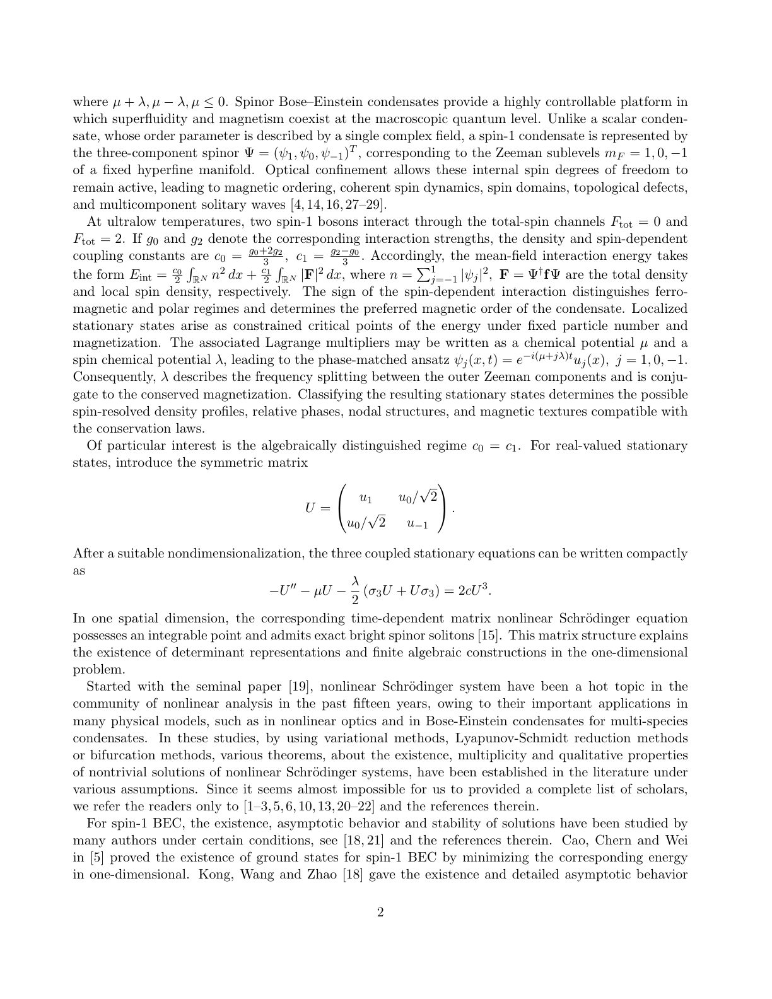
<figcaption class="paper-figure-caption"><b>Fig 1.</b> Low-resolution page preview, page 2</figcaption>
</figure>
<figure class="paper-figure-card">
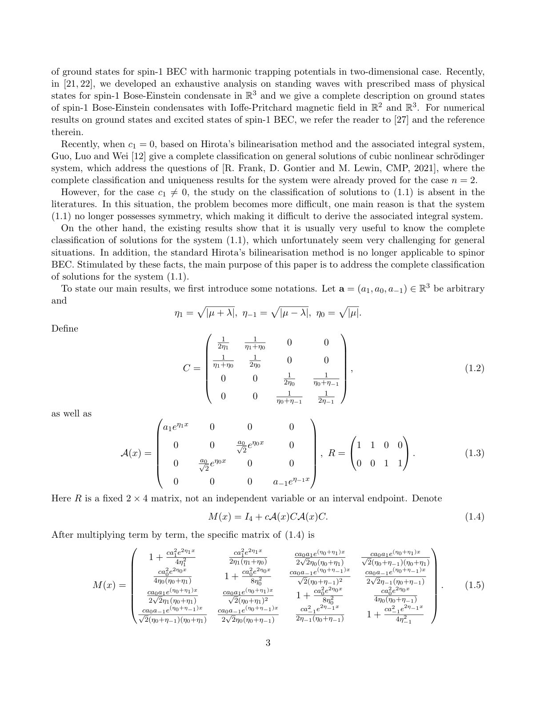
<figcaption class="paper-figure-caption"><b>Fig 2.</b> Low-resolution page preview, page 3</figcaption>
</figure>
<figure class="paper-figure-card">
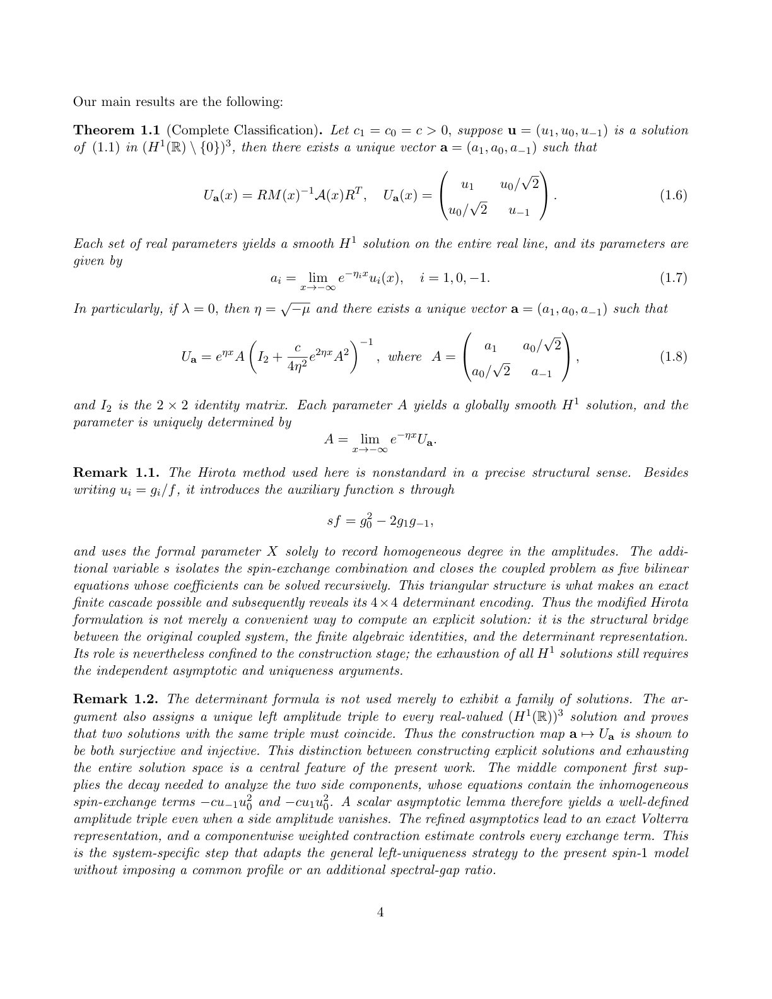
<figcaption class="paper-figure-caption"><b>Fig 3.</b> Low-resolution page preview, page 4</figcaption>
</figure>
<figure class="paper-figure-card">
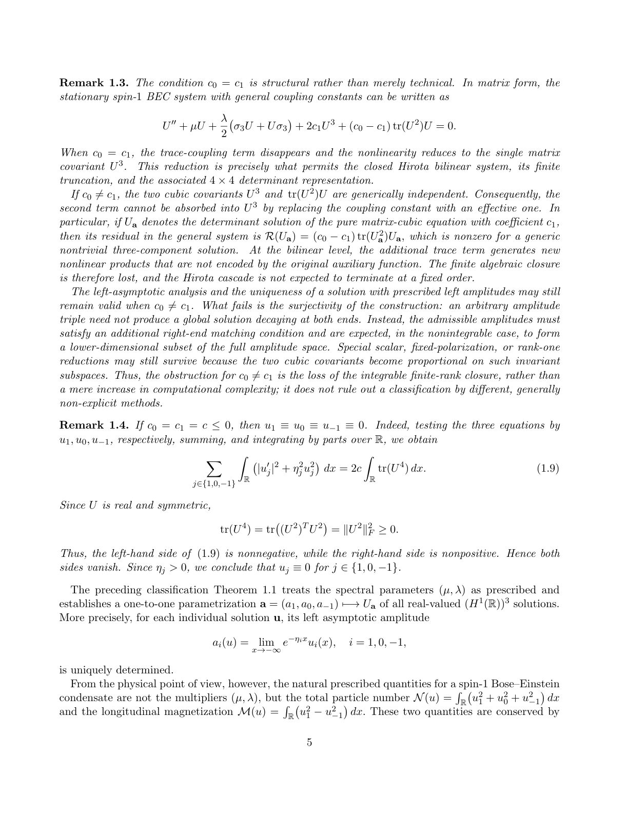
<figcaption class="paper-figure-caption"><b>Fig 4.</b> Low-resolution page preview, page 5</figcaption>
</figure>
<figure class="paper-figure-card">
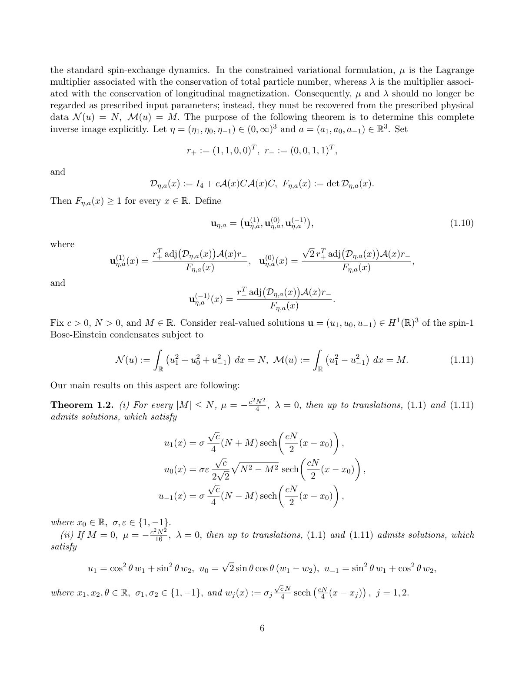
<figcaption class="paper-figure-caption"><b>Fig 5.</b> Low-resolution page preview, page 6</figcaption>
</figure>
</div>

<p><strong>Summary.</strong> This paper rigorously classifies all stationary solutions for spin-1 Bose-Einstein condensates in one dimension. By employing advanced mathematical tools like the non-standard Hirota method, the authors overcome previous limitations to provide a complete catalog of possible spin configurations. The results offer experimentally testable predictions regarding the spin populations and magnetic textures within these quantum magnetic systems.</p>
<p><strong>Why it may be interesting.</strong> This work provides a rigorous, complete mathematical classification of the ground and excited states for a fundamental model in ultracold atomic physics, linking abstract mathematical structures to measurable physical quantities.</p>
<details>
<summary>Detailed structure</summary>
<p><strong>Main problem.</strong> To provide a complete classification of stationary solutions for spin-1 Bose-Einstein condensates in one dimension ($\mathbb{R}$).</p>
<p><strong>Main result.</strong> The authors present a complete classification of solutions, yielding explicit, novel solutions parameterized by physical constraints like total particle number and magnetization.</p>
<p><strong>Method.</strong> The classification employs advanced mathematical techniques, including the non-standard Hirota's bilinear method, determinant formulas, and general left-uniqueness strategies.</p>
<p><strong>Model / system.</strong> The system models spin-1 Bose-Einstein condensates, governed by a coupled Gross-Pitaevskii equation for three Zeeman components ($\psi_1, \psi_0, \psi_{-1}$), which is a platform for studying quantum magnetism.</p>
<p><strong>Key observables.</strong> Spin populations, relative phases, and magnetic textures are predicted by the classification.</p>
<p><strong>Important parameters / regimes.</strong> Interaction strengths ($c_0, c_1$), chemical potentials ($\mu, \lambda$), and conserved quantities like total particle number ($N$) and magnetization ($M$).</p>
<p><strong>Assumptions / limitations.</strong> The analysis relies on the solution belonging to the 'noncollision determinant family' and involves detailed case-by-case analysis based on the support of the asymptotic amplitudes.</p>
<p><strong>Figures summary.</strong> Not specified.</p>
<p><strong>Paper structure.</strong> The paper systematically analyzes the stationary equation by applying advanced mathematical methods (non-standard Hirota, determinant formula) to derive constraints on parameters ($\mu, \lambda$) and classify solutions based on the non-zero pattern of asymptotic amplitudes $(\epsilon_1, \epsilon_0, \epsilon_{-1})$.</p>
</details>
<details>
<summary>Abstract</summary>
<p>Spin-1 Bose-Einstein condensates provide a fundamental platform for exploring quantum magnetism and coherent spin dynamics. Their three Zeeman components are coupled by spin-exchange interactions under conserved particle number and magnetization, giving rise to rich magnetic phases and nonlinear spin structures; a rigorous classification of stationary states therefore clarifies the possible spin configurations and their physical origins. In this paper, as a continuation of our previous work \cite{LLWZ23,LLWZ24,LLWZ26}, we study the classification of solution for the spin-1 Bose-Einstein condensates in $\mathbb{R}$, by applying the non-standard Hirota's bilinear method, the determinant formula and the general left-uniqueness strategy, we present some novel explicit solution and give the complete classification of the solutions. In comparison with the classical Hirota's method, the non-standard Hirota's method needs to introduce auxiliary functions to construct Hirota's bilinear form, which essentially adds additional constraint on the wave functions, so that it possible to deal with more complex equations. As far as we know, this is the first systematic study the complete classification of solutions to the spin-1 Bose-Einstein condensates. Our classification results yields experimentally testable predictions for spin populations, relative phases, and magnetic textures</p>
</details>
<p><sub><a href="#top">↑ back to top</a></sub></p>

<p><a id="paper-2610.04621"></a></p>
<h3 id="exact-clifford-optimality-for-two-sided-locally-randomized-classical-shadows"><a href="http://arxiv.org/abs/2610.04621v1">Exact Clifford Optimality for Two-Sided Locally Randomized Classical Shadows</a></h3>
<p><strong>Authors:</strong> Xiaotian Nie, Tao Zhang, Yadong Wu, Linghui Chen<br>
<strong>Type:</strong> theory · <strong>Category:</strong> quantum information and computing · <strong>PDF:</strong> <a href="https://arxiv.org/pdf/2610.04621v1">https://arxiv.org/pdf/2610.04621v1</a><br>
<strong>Analysis basis:</strong> full PDF text, analyzed in chunks
<strong>Topic relevance:</strong> <code>quantum measurements</code> <strong>3/5</strong></p>
<div class="figure-strip-hint">↔ Scroll figures horizontally</div>
<div class="paper-figures-scroll">
<figure class="paper-figure-card">
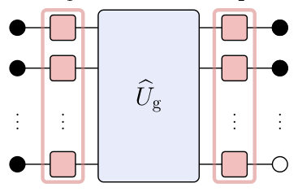
<figcaption class="paper-figure-caption"><b>Fig 1.</b> FIG. 1. Schematic of the classical shadow tomography proto- col for a Pauli string operator acting on a subsystem, following Ref. [24]. The protocol comprises a global Clifford unitary bUg (blue block) sandwiched between two layers bR1 and bR2 of random single-qubit Clifford rotations (pink blocks) applied to the subsystem. Filled and open circles denote nonidentity and identity factors of the propagated Pauli string, respec- tively.</figcaption>
</figure>
<figure class="paper-figure-card">
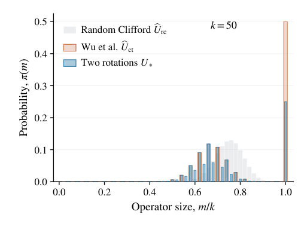
<figcaption class="paper-figure-caption"><b>Fig 2.</b> FIG. 2. Exact output-size distributions for a full-support in- put on k = 50 qubits. The random Clifford and contractive distributions reproduce the comparison in Ref. [24]; U∗adds the two-rotation construction of this work. Each bar height is the probability π(m) at an integer output size m. Translucent bars are centered at m/k; different widths distinguish over- lapping bars, including the coincident odd-m probabilities of bUct and U∗. The full-size peak is approximately 1/2 for bUct and 1/4 for U∗. All values are exact combinatorial probabili- ties, with no sampling or smoothing.</figcaption>
</figure>
<figure class="paper-figure-card">
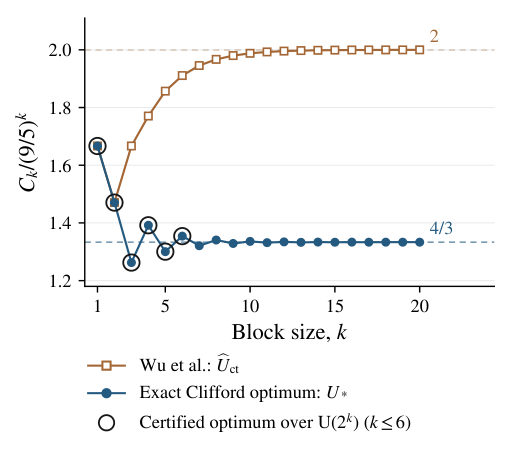
<figcaption class="paper-figure-caption"><b>Fig 3.</b> FIG. 3. Exact statistical costs for full-support estimation on a k-qubit block, from the closed-form Pauli weights. The U∗curve is the Clifford optimum of Theorem 2 for every k; dashed lines show the asymptotic coefficients 2 and 4/3. Black rings at 1 ≤k ≤6 mark the points also certified optimal over bUg ∈U(2k), including non-Clifford unitaries, in the same measurement architecture (Theorem 7). Lines connect integer values of k as a guide to the eye.</figcaption>
</figure>
<figure class="paper-figure-card">
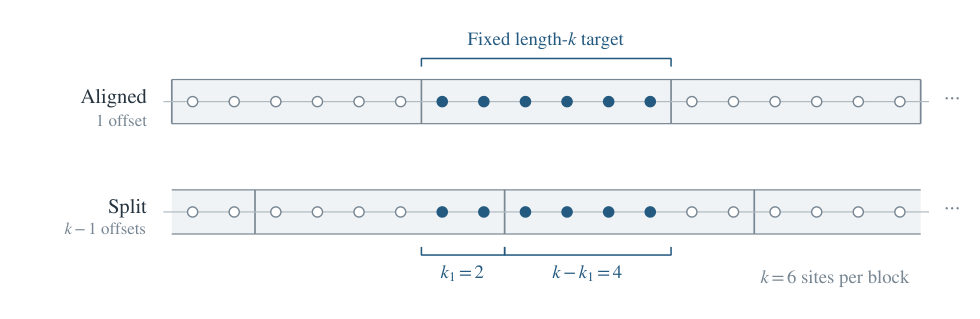
<figcaption class="paper-figure-caption"><b>Fig 4.</b> FIG. 4. Uniformly shifted blocks, illustrated at k = 6. The target occupies the same six filled sites in both rows. Each measurement block contains k sites; open sites carry identity factors of the target observable. One offset aligns the target with a block. The other k −1 offsets split it between neighboring blocks; the example has k1 = 2 and k −k1 = 4. The region size, target length, and block size all equal k here. The chain continues beyond the displayed sites.</figcaption>
</figure>
<figure class="paper-figure-card">
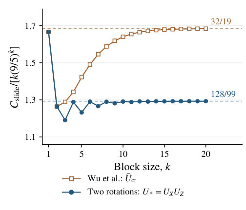
<figcaption class="paper-figure-caption"><b>Fig 5.</b> FIG. 5. Exact statistical costs for a length-k contiguous tar- get measured with uniformly shifted k-site blocks, from the closed-form Pauli weights. The curves evaluate the two stated constructions, with asymptotic coefficients 32/19 and 128/99. The figure does not assert optimality among sliding protocols. Lines connect integer values of k as a guide to the eye.</figcaption>
</figure>
</div>

<p><strong>Summary.</strong> This paper rigorously determines the minimum statistical cost for estimating many-body Pauli correlations using a specific randomized quantum measurement scheme. The authors prove that a simple, structured circuit $U^*$ achieves this theoretical minimum for all $k$, significantly improving previous asymptotic estimates. The work establishes strong optimality results for small systems and provides deep mathematical tools for analyzing quantum measurement resource bounds.</p>
<p><strong>Why it may be interesting.</strong> This work provides rigorous, finite-size optimality proofs for quantum state tomography protocols, which is crucial for designing resource-efficient quantum measurements in quantum computing and quantum information theory.</p>
<details>
<summary>Detailed structure</summary>
<p><strong>Main problem.</strong> The paper determines the exact minimum statistical cost (squared shadow norm) required to estimate many-body Pauli correlations on a $k$-qubit region using a specific two-sided locally randomized Clifford measurement architecture.</p>
<p><strong>Main result.</strong> The authors prove that a simple circuit $U^*$ of two collective Pauli rotations achieves the exact minimum shadow norm for all $k \ge 1$ within the Clifford measurement setting, and this optimum extends to the entire unitary group $U(2^k)$ for small $k$.</p>
<p><strong>Method.</strong> The analysis relies heavily on symplectic linear algebra, quadratic forms on $\mathbb{F}_2^{2k}$, and deriving necessary constraints from the Choi state representation to establish rigorous upper and lower bounds on the measurement cost.</p>
<p><strong>Model / system.</strong> The system involves estimating Pauli strings (observables) acting on a $k$-qubit region within a larger quantum system. The measurement protocol uses a two-sided randomized Clifford measurement structure: $bU = bR_2 bUg bR_1$.</p>
<p><strong>Key observables.</strong> Squared shadow norm ($C_k$), Pauli weight, and the score function ($S_k$) which quantifies the sampling cost.</p>
<p><strong>Important parameters / regimes.</strong> The number of qubits in the region ($k$), and the asymptotic scaling factor $(9/5)^k$.</p>
<p><strong>Assumptions / limitations.</strong> The primary assumption is that the measurement architecture is restricted to two-sided locally randomized Clifford gates, although the results for small $k$ extend optimality to the full unitary group $U(2^k)$.</p>
<p><strong>Figures summary.</strong> Figures illustrate the classical shadow tomography protocol, compare the exact statistical costs for full-support estimation using $U^*$ versus other circuits, and show asymptotic cost ratios for sliding-block measurements.</p>
<p><strong>Paper structure.</strong> The paper progresses by first establishing the general framework using symplectic tools, deriving necessary constraints from the Choi state, providing exact rational certificates for small $k$ (up to $k=6$), and finally analyzing asymptotic behavior for sliding-block measurements.</p>
</details>
<details>
<summary>Abstract</summary>
<p>Entangling measurements can reduce the statistical cost of learning many-body correlations. We study Pauli strings with full support on a specified $k$-qubit region using classical shadows with two independent, uniformly random product single-qubit Clifford layers around a controllable unitary acting on that region, followed by computational-basis readout. In this architecture, we prove that a circuit $U_*$ of two collective Pauli rotations attains the exact minimum squared shadow norm over all Clifford choices of the controllable unitary for every $k\geq1$, namely $C_k^{\rm opt}=4\cdot 9^k/(3\cdot 5^k+3^k-6)$ for odd $k$ and $C_k^{\rm opt}=4\cdot 9^k/(3\cdot 5^k-3^k+2)$ for even $k$. The asymptotic optimum $(4/3)\cdot(9/5)^k$ establishes Wu et al.'s exponential base as optimal and improves their prefactor from $2$ to $4/3$. For $1\leq k\leq6$, exact rational certificates prove that the same optimum holds over the entire unitary group $\mathrm U(2^k)$, including all non-Clifford unitaries, within the same measurement architecture. These finite-size results motivate the conjecture that $U_*$ is optimal over all unitaries for arbitrary $k$ within this architecture.</p>
</details>
<p><sub><a href="#top">↑ back to top</a></sub></p>

<p><a id="paper-2610.05627"></a></p>
<h3 id="ground-state-energy-estimation-and-preparation-by-the-truncated-power-method"><a href="http://arxiv.org/abs/2610.05627v1">Ground state energy estimation and preparation by the truncated power method</a></h3>
<p><strong>Authors:</strong> Savero Lukianto Chandra, Daochen Wang, Carolyn Zhang<br>
<strong>Type:</strong> theory · <strong>Category:</strong> quantum information and computing · <strong>PDF:</strong> <a href="https://arxiv.org/pdf/2610.05627v1">https://arxiv.org/pdf/2610.05627v1</a><br>
<strong>Analysis basis:</strong> full PDF text, analyzed in chunks
<strong>Topic relevance:</strong> <code>analog quantum simulation</code> <strong>3/5</strong></p>
<div class="figure-strip-hint">↔ Scroll figures horizontally</div>
<div class="paper-figures-scroll">
<figure class="paper-figure-card">
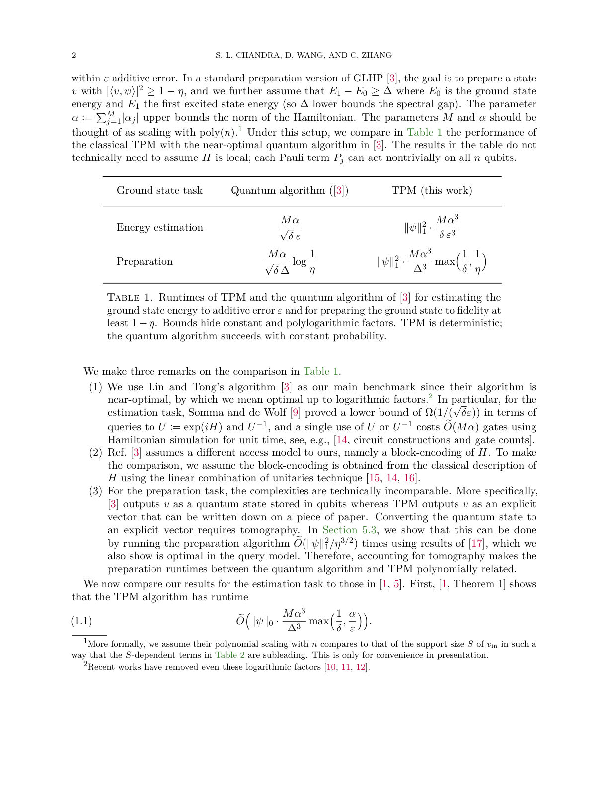
<figcaption class="paper-figure-caption"><b>Fig 1.</b> Low-resolution page preview, page 2</figcaption>
</figure>
<figure class="paper-figure-card">
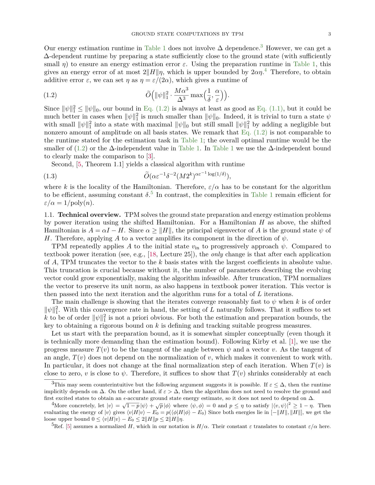
<figcaption class="paper-figure-caption"><b>Fig 2.</b> Low-resolution page preview, page 3</figcaption>
</figure>
<figure class="paper-figure-card">
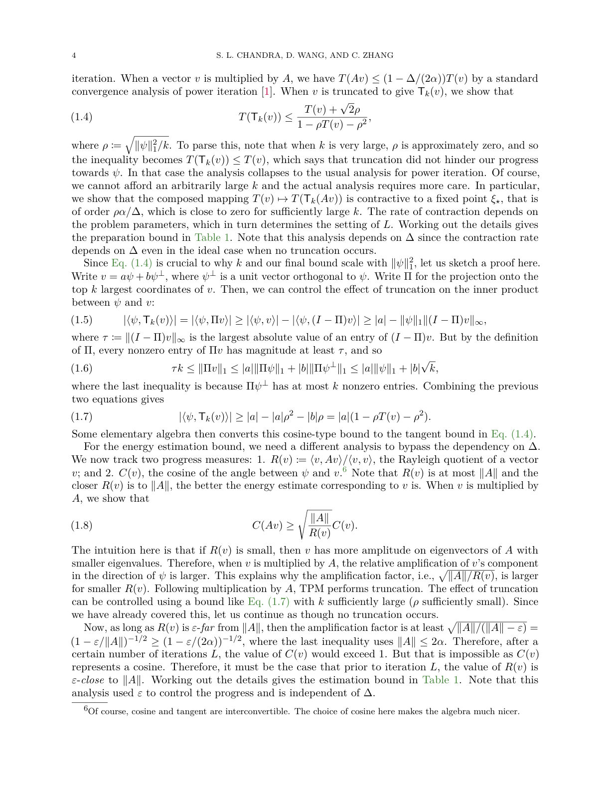
<figcaption class="paper-figure-caption"><b>Fig 3.</b> Low-resolution page preview, page 4</figcaption>
</figure>
<figure class="paper-figure-card">
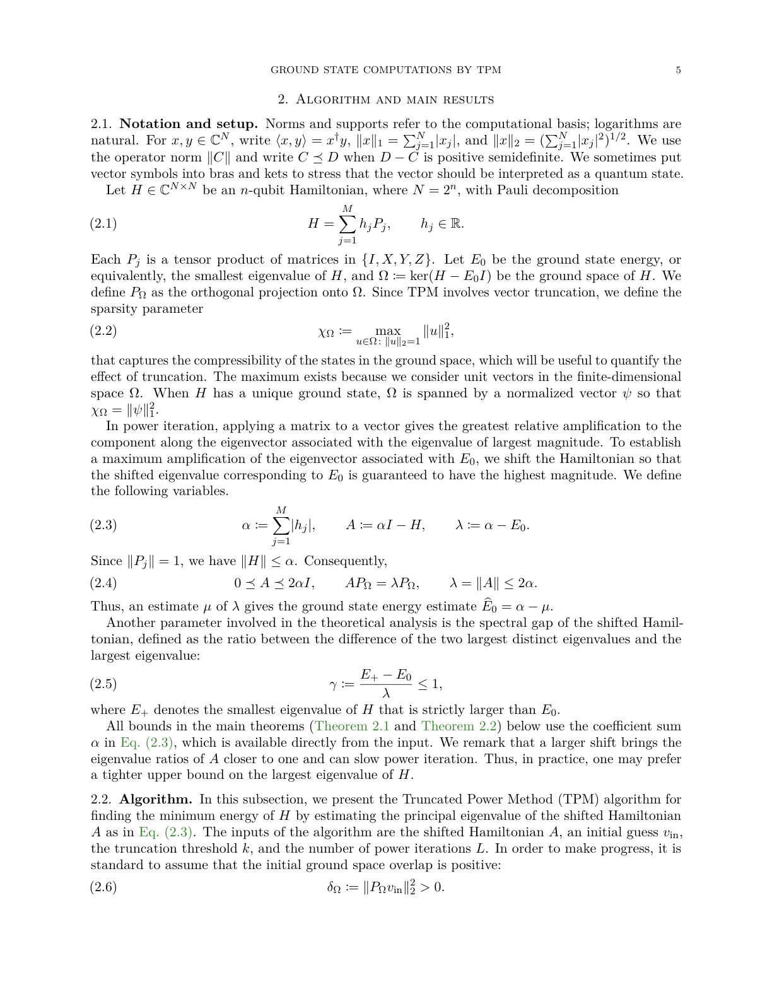
<figcaption class="paper-figure-caption"><b>Fig 4.</b> Low-resolution page preview, page 5</figcaption>
</figure>
<figure class="paper-figure-card">
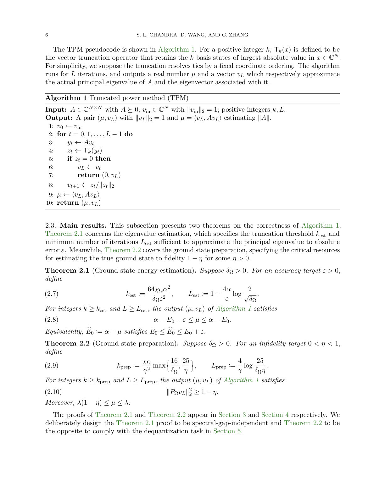
<figcaption class="paper-figure-caption"><b>Fig 5.</b> Low-resolution page preview, page 6</figcaption>
</figure>
</div>

<p><strong>Summary.</strong> This paper analyzes the classical feasibility of estimating and preparing the ground state energy for a quantum system governed by a Pauli Hamiltonian. It proves that if the ground state has a polynomially bounded $\ell_1$-norm, the Truncated Power Method (TPM) can solve the problem with a runtime polynomially comparable to quantum algorithms. This establishes a crucial condition under which classical simulation techniques can efficiently mimic quantum computation for finding ground states.</p>
<p><strong>Why it may be interesting.</strong> This work provides a concrete, classically implementable pathway to solve a hard quantum problem (GLHP) under specific, physically relevant conditions ($\|\psi\|_1$ bounded), which is highly relevant for simulating quantum materials.</p>
<details>
<summary>Detailed structure</summary>
<p><strong>Main problem.</strong> The paper addresses the Ground State Energy Estimation and Preparation problem, known as the Guided Local Hamiltonian Problem (GLHP).</p>
<p><strong>Main result.</strong> It shows that the GLHP becomes classically tractable in a specific orthogonal regime where the ground state's $\ell_1$-norm is polynomially bounded, allowing the Truncated Power Method (TPM) to achieve quantum-like performance.</p>
<p><strong>Method.</strong> The authors analyze the performance of the classical Truncated Power Method (TPM) by deriving complexity bounds for both energy estimation and state preparation.</p>
<p><strong>Model / system.</strong> The system is described by a Hamiltonian $H$ composed of a real linear combination of Pauli terms, $H = \sum \alpha_j P_j$. The analysis focuses on the ground state $\psi$ of this Hamiltonian.</p>
<p><strong>Key observables.</strong> Ground state energy ($E_0$), fidelity ($\eta$), overlap ($\delta$), and the $\ell_1$-norm of the ground state ($\|\psi\|_1$).</p>
<p><strong>Important parameters / regimes.</strong> The spectral gap ($\Delta$), the number of Pauli terms ($M$), and the error tolerances ($\epsilon, \eta$).</p>
<p><strong>Assumptions / limitations.</strong> The key assumption for the classical tractability result is that the true ground state $\psi$ must have a polynomially bounded $\ell_1$-norm ($\|\psi\|_{1}$).</p>
<p><strong>Figures summary.</strong> The notes reference tables detailing the runtime scaling for energy estimation and preparation using TPM, showing dependencies on parameters like $M, \alpha, \delta, \epsilon, \Delta$, and $\|\psi\|_{1}$.</p>
<p><strong>Paper structure.</strong> The paper establishes the complexity landscape of GLHP, identifies the $\ell_1$-norm condition for classical tractability, and then derives specific, improved runtime bounds for TPM compared to general quantum algorithm bounds.</p>
</details>
<details>
<summary>Abstract</summary>
<p>The Guided Local Hamiltonian Problem (GLHP) is the problem of ground state energy estimation and preparation given a guiding state having good overlap with the true ground state. The problem is known to be BQP-complete for small error but is classically tractable for larger error. In this work, we identify an orthogonal regime in which the problem is classically tractable, namely when the true ground state $ψ$ has polynomially bounded $\ell_1$-norm. In particular, we show that the Truncated Power Method (TPM), a classical algorithm introduced by Kirby et al. in the quantum context, has a runtime that is polynomially comparable to quantum algorithms for GLHP in all relevant parameters, except for an extra factor of $\|ψ\|_1^2$. In other words, if $\|ψ\|_1^2$ is polynomially bounded, then TPM dequantizes quantum algorithms for GLHP.</p>
</details>
<p><sub><a href="#top">↑ back to top</a></sub></p>

<p><a id="paper-2610.03920"></a></p>
<h3 id="magic-quantum-code-surgery"><a href="http://arxiv.org/abs/2610.03920v1">Magic Quantum Code Surgery</a></h3>
<p><strong>Authors:</strong> Kathleen Chang, Anasuya Lyons, Yuanjie Ren, Harald Putterman, Nathanan Tantivasadakarn, Victor V. Albert, Benjamin J. Brown, Dominic J. Williamson<br>
<strong>Type:</strong> theory · <strong>Category:</strong> quantum information and computing · <strong>PDF:</strong> <a href="https://arxiv.org/pdf/2610.03920v1">https://arxiv.org/pdf/2610.03920v1</a><br>
<strong>Analysis basis:</strong> full PDF text, analyzed in chunks
<strong>Topic relevance:</strong> <code>quantum measurements</code> <strong>3/5</strong></p>
<div class="figure-strip-hint">↔ Scroll figures horizontally</div>
<div class="paper-figures-scroll">
<figure class="paper-figure-card">
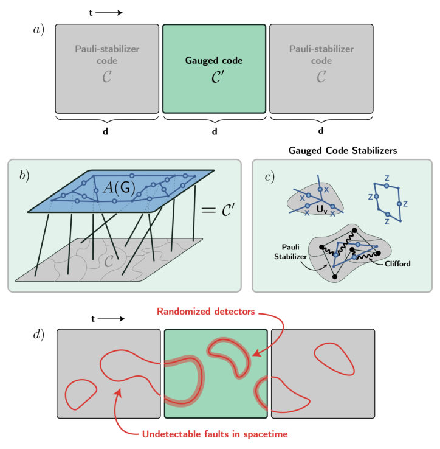
<figcaption class="paper-figure-caption"><b>Fig 1.</b> FIG. 1. (a) An abstract depiction of the spacetime volume for the protocol to measure a Clifford operator. Time flows from left to right. We begin with 𝑑rounds of syndrome extraction in a Pauli-stabilized code 𝒞 with distance 𝑑, where 𝒞has a transversal Clifford operator U that we wish to measure. We switch into a gauged code 𝒞′ and measure the stabilizers of the gauged code for 𝑑rounds. Then, we ungauge, returning to the original code, now projected onto an eigenspace of U. We finish the gadget by measuring 𝑑rounds of the 𝒞. (b) The gauged code 𝒞′. The gauged code is constructed by taking the base code 𝒞and attaching a graph 𝐴(G) (blue) with an ancilla at every edge. The connection between...</figcaption>
</figure>
<figure class="paper-figure-card">

<figcaption class="paper-figure-caption"><b>Fig 2.</b> FIG. 2. Two different loop-like faults in spacetime that satisfy the cutting condition (Def. IV.19). a) 𝑃± are the unshaded regions, while 𝐶is the shaded region of spacetime where the faults have no support. In each of the three segments of the measurement protocol, pre-, during, and post-gauging, we can find a suitable region 𝐶. b) The cutting condition can hold for faults spanning gauging boundaries as well.</figcaption>
</figure>
<figure class="paper-figure-card">

<figcaption class="paper-figure-caption"><b>Fig 3.</b> FIG. 3. Self-dual bivariate bicycle code: Lattice of the self-dual bivariate bicycle code, with the 𝐴 sublattice denoted by black circles, and the 𝐵sublattice by white circles. The red and blue highlights show the support of the stabilizers. All stabilizers are present as both X and Z type.</figcaption>
</figure>
<figure class="paper-figure-card">

<figcaption class="paper-figure-caption"><b>Fig 4.</b> FIG. 4. Gauged self-dual bivariate bicycle code: We show selected stabilizers at different stages of the gauging procedure. Physical qubits are placed at the vertices of the underlying 4.8.8 tiling. (a) Intermediate step where we have added vertex ancillas, performed the entangling gates between vertex ancillas and neighboring qubits, added new edges and gauge qubits, and performed the cluster state entangler. (b) Final gauged code. Squigly lines represent CZ gates that result from dressing.</figcaption>
</figure>
<figure class="paper-figure-card">

<figcaption class="paper-figure-caption"><b>Fig 5.</b> FIG. 5. Gauging CNOT between bivariate bicycle codes: We show all the steps for gauging a CNOT between two bivariate bicycle codes. In this example a gauging vertex is associated to each pair of qubits in the support of a CNOT. (a) We show control-block 𝑋stabilizers (green), target-block 𝑍stabilizers (blue), and vertex ancilla (red). (b) Stabilizers after performing the 𝐶𝐶𝑁𝑂𝑇operation between vertex ancillas and the qubits in both codeblocks. (c) The gauging graph is pictured in red dashed lines (only some of the long-range connections are pictured and the lattice is slightly deformed around the support of the stabilizers purely for visual clarity), edge ancillas initialized in |0⟩. (d)...</figcaption>
</figure>
</div>

<p><strong>Summary.</strong> This paper introduces a general, fault-tolerant framework for measuring logical non-Clifford operators within QLDPC quantum error-correcting codes. By 'gauging' the code structure across ancillary qubits, the authors construct a new code whose stabilizers allow for the measurement of the desired logical gate. This method preserves the code's distance and ensures fault tolerance, providing a pathway to universal quantum computation.</p>
<p><strong>Why it may be interesting.</strong> The rigorous development of fault-tolerant measurement protocols for non-Clifford gates is a cornerstone requirement for scaling up quantum computation beyond current NISQ devices.</p>
<details>
<summary>Detailed structure</summary>
<p><strong>Main problem.</strong> The paper addresses the challenge of fault-tolerantly measuring logical non-Clifford operators, which are necessary for achieving universal quantum computation using QLDPC codes.</p>
<p><strong>Main result.</strong> They present a generalized, fault-tolerant framework that deforms the QLDPC code across ancillary qubits to measure the desired logical Clifford operator, preserving the code's distance up to a constant factor.</p>
<p><strong>Method.</strong> The core method involves a 'spacetime gauging procedure' where the original QLDPC code is augmented with ancillary qubits to create a gauged code ($\mathcal{C}'$), whose stabilizers are measured to realize the logical operation.</p>
<p><strong>Model / system.</strong> The system studied is the Quantum Low-Density Parity-Check (QLDPC) code, generalized to modular q-ary qudit codes. The process involves constructing a 'gauged code' ($\mathcal{C}'$) by deforming the original code structure.</p>
<p><strong>Key observables.</strong> Fault distance (which grows linearly with the original code distance), the distance of the gauged code ($d_g$), and the resulting logical Clifford operator measurement.</p>
<p><strong>Important parameters / regimes.</strong> The code distance ($d$), the number of physical qubits ($n$), and the order of the operator ($p \geq 2$).</p>
<p><strong>Assumptions / limitations.</strong> The method relies on the ability to perform local measurements that deform the code structure, and some proofs are cited as being informal or requiring further work for specific operators ($p>2$).</p>
<p><strong>Figures summary.</strong> Figure 1 illustrates the spacetime protocol for gauging, showing the structure of the gauged code $\mathcal{C}'$, the resulting stabilizers, and the fault tolerance analysis.</p>
<p><strong>Paper structure.</strong> The paper introduces the general gauging framework, proves that the resulting code remains LDPC with preserved distance, details the fault-tolerant measurement protocol, and applies these methods to prepare magic states and implement non-Clifford gates.</p>
</details>
<details>
<summary>Abstract</summary>
<p>Non-Clifford operations required for universal quantum computation can be implemented by measuring logical Clifford operators. We present a generalized framework to fault-tolerantly measure transversal Clifford logical operators in quantum low-density parity check (QLDPC) codes. Our protocol takes any QLDPC code and deforms the code across additional ancillary qubits such that a product of stabilizers measures the desired logical Clifford operator. We prove that the deformed, Clifford-stabilized code remains LDPC and that its distance is preserved up to a constant factor independent of the number of physical qubits. We further prove that the Clifford measurement has a fault distance against data qubit and measurement errors that grows linearly with the distance of the original code. We apply our methods to implement logical non-Clifford gates in algorithmically relevant subroutines and to prepare magic states in quantum stabilizer codes.</p>
</details>
<p><sub><a href="#top">↑ back to top</a></sub></p>

<p><a id="paper-2610.06551"></a></p>
<h3 id="mid-circuit-measurements-and-feedforward-implement-every-unitary-exactly-in-constant-depth"><a href="http://arxiv.org/abs/2610.06551v1">Mid-circuit measurements and feedforward implement every unitary exactly in constant depth</a></h3>
<p><strong>Authors:</strong> Chenfeng Cao<br>
<strong>Type:</strong> theory · <strong>Category:</strong> quantum information and computing · <strong>PDF:</strong> <a href="https://arxiv.org/pdf/2610.06551v1">https://arxiv.org/pdf/2610.06551v1</a><br>
<strong>Analysis basis:</strong> full PDF text, analyzed in chunks
<strong>Topic relevance:</strong> <code>quantum measurements</code> <strong>3/5</strong></p>
<div class="figure-strip-hint">↔ Scroll figures horizontally</div>
<div class="paper-figures-scroll">
<figure class="paper-figure-card">

<figcaption class="paper-figure-caption"><b>Fig 1.</b> Figure 1: Residual repair. (a) Schematic picture of the blocks. Direct Choi encoding (dotted route) requires Θ(d) amplification rounds. Adding the residual instead produces U/(1 + ν), which a flag rescales to U/2 before one exact amplification step. (b) The circuit V and the amplifier. The selector chooses between the approximate circuit C (open control) and the residual circuit CE (closed control). Inside CE, the preparation circuit satisfies PE|0⟩= |e⟩AB|0⟩prep; preparation work is omitted from the drawing. The circuit CE then applies the inverse Bell transform to B and the data, and swaps A into the data position. All registers except the data start in |0⟩. The operator R0 = I −2Π in Eq....</figcaption>
</figure>
<figure class="paper-figure-card">

<figcaption class="paper-figure-caption"><b>Fig 2.</b> Figure 2: Schematic depth–width landscape for generic unitaries, with constants and logarithmic factors suppressed. Shading marks the parameter-counting bound on circuit spacetime volume. The linear- depth floor without feedforward follows from backward circuit causal cones. Solid and dashed blue curves show Theorems 6 and S8; dark and light stars mark the constant-depth and O(n)-depth constructions. Gray curves and the diamond are earlier exact constructions [12, 14, 18]. Open circles show Ref. [21] at ε = 1/d, offset to the right for visibility; the arrow shows increasing accuracy at constant fanout depth. For smaller widths, Sun et al.’s bound O(nd + d2/w) [12] completes the frontier up...</figcaption>
</figure>
</div>

<p><strong>Summary.</strong> This paper presents a breakthrough in quantum circuit synthesis, demonstrating that by incorporating mid-circuit measurements and feedforward, the depth required to implement any $n$-qubit unitary can be reduced to a constant depth, $O(1)$. This significantly improves upon previous bounds of $\Theta(n)$ depth. The results establish powerful depth-width trade-offs for quantum computation.</p>
<p><strong>Why it may be interesting.</strong> This work provides fundamental, resource-efficient circuit blueprints for universal quantum computation, which is crucial for designing hardware-efficient quantum algorithms.</p>
<details>
<summary>Detailed structure</summary>
<p><strong>Main problem.</strong> The paper addresses the fundamental question of determining the minimum quantum depth required for the exact synthesis of an arbitrary $n$-qubit unitary operation.</p>
<p><strong>Main result.</strong> Mid-circuit measurements combined with feedforward reduce the optimal worst-case quantum depth for exact unitary synthesis from $\Theta(n)$ to $O(1)$.</p>
<p><strong>Method.</strong> The authors employ techniques like residual repair, coherent interference, and deterministic constructions utilizing single-qubit measurements and parity feedforward.</p>
<p><strong>Model / system.</strong> The model is quantum computation using $n$ input qubits and ancillary qubits, allowing arbitrary one- and two-qubit gates with all-to-all connectivity.</p>
<p><strong>Key observables.</strong> Quantum depth ($h$), circuit width ($w$), and the error norm ($\|U - eU\|$).</p>
<p><strong>Important parameters / regimes.</strong> The number of qubits ($n$), the target unitary dimension ($d$), and the depth/width trade-off exponent.</p>
<p><strong>Assumptions / limitations.</strong> The construction assumes unrestricted ancillary space and relies on the ability to prepare the residual state exactly.</p>
<p><strong>Figures summary.</strong> Figures illustrate the 'Residual repair' process, comparing direct Choi encoding methods with the improved residual-based method, and show the depth-width landscape for various synthesis bounds.</p>
<p><strong>Paper structure.</strong> The paper builds from establishing general depth-width trade-offs (Theorem 7) to introducing the residual repair technique (Theorem 2), and culminates in the constant-depth construction using measurement and feedforward (Theorem 1).</p>
</details>
<details>
<summary>Abstract</summary>
<p>Mid-circuit measurements with feedforward reduce the optimal worst-case quantum depth for exact $n$-qubit unitary synthesis from $Θ(n)$ to $O(1)$, using arbitrary one- and two-qubit gates and unrestricted ancillary space. Measurements and resets without feedforward remain subject to the circuit causal-cone bound. Our deterministic construction uses single-qubit measurements, $O(1)$ rounds of parity feedforward, and $O(n4^n\log(n+2))$ total qubits, with all ancillas starting and ending in $|0\rangle$. Classical processing is not counted in quantum depth. We teleport only the matrix error of an approximation by Nehoran and Yuen. An exactly prepared ancillary state encodes this error, whose action is added back by coherent interference. At operator-norm error $2^{-n}$, one step of amplitude amplification suffices. Coherent fanout circuits achieve the same constant-depth bound, while circuits using only one- and two-qubit gates attain depth $Θ(n)$ with $O(4^n\log^2(n+2))$ gates. Generic targets require $Ω(4^n/(h+1))$ qubits at depth $h$, even under unrestricted classical control. Our depth-width trade-offs meet this bound within a factor $O(n^2)$ for $1\le h\le2^n$.</p>
</details>
<p><sub><a href="#top">↑ back to top</a></sub></p>

<p><a id="paper-2610.05374"></a></p>
<h3 id="minimax-quantum-state-tomography-in-a-known-trace-distance-ball"><a href="http://arxiv.org/abs/2610.05374v1">Minimax Quantum State Tomography in a Known Trace-Distance Ball</a></h3>
<p><strong>Authors:</strong> Yonglong Li<br>
<strong>Type:</strong> theory · <strong>Category:</strong> quantum information and computing · <strong>PDF:</strong> <a href="https://arxiv.org/pdf/2610.05374v1">https://arxiv.org/pdf/2610.05374v1</a><br>
<strong>Analysis basis:</strong> full PDF text, analyzed in chunks
<strong>Topic relevance:</strong> <code>quantum measurements</code> <strong>3/5</strong></p>
<div class="figure-strip-hint">↔ Scroll figures horizontally</div>
<div class="paper-figures-scroll">
<figure class="paper-figure-card">

<figcaption class="paper-figure-caption"><b>Fig 1.</b> Low-resolution page preview, page 2</figcaption>
</figure>
<figure class="paper-figure-card">

<figcaption class="paper-figure-caption"><b>Fig 2.</b> Low-resolution page preview, page 3</figcaption>
</figure>
<figure class="paper-figure-card">

<figcaption class="paper-figure-caption"><b>Fig 3.</b> Low-resolution page preview, page 4</figcaption>
</figure>
<figure class="paper-figure-card">

<figcaption class="paper-figure-caption"><b>Fig 4.</b> Low-resolution page preview, page 5</figcaption>
</figure>
<figure class="paper-figure-card">

<figcaption class="paper-figure-caption"><b>Fig 5.</b> Low-resolution page preview, page 6</figcaption>
</figure>
</div>

<p><strong>Summary.</strong> This paper determines the fundamental limits (minimax risk and confidence radius) for quantum state tomography when the unknown state is known to lie within a specific trace-distance ball. It achieves rate-optimality by deriving a universal coefficient $\Gamma$ that governs the scaling with sample size $n$. The results are significant because they provide uniform bounds applicable to arbitrary quantum spectra and measurements.</p>
<p><strong>Why it may be interesting.</strong> It provides rigorous, rate-optimal bounds for state estimation in a constrained setting, which is crucial for understanding the fundamental limits of quantum characterization protocols in quantum information processing.</p>
<details>
<summary>Detailed structure</summary>
<p><strong>Main problem.</strong> The paper addresses the problem of quantum state tomography when the unknown quantum state is constrained to lie within a known trace-distance ball around a reference state.</p>
<p><strong>Main result.</strong> It establishes the minimax expected risk and confidence radius bounds, showing they scale as $\Theta(\min\{R, \Gamma/n\})$ and $\Theta(\min(R, \Gamma_\delta/n))$, respectively, where $\Gamma$ is a coefficient dependent on the state and radius.</p>
<p><strong>Method.</strong> The analysis uses advanced estimation theory, employing weighted trace-norm witnesses for lower bounds and analyzing modified purification-based procedures for upper bounds.</p>
<p><strong>Model / system.</strong> The system involves quantum states $\sigma$ (density matrices) on $d$ dimensions, constrained by the trace-distance ball $B_R(
ho)$. The measurements are arbitrary collective Positive Operator-Valued Measures (POVMs) applied to $n$ copies of the state.</p>
<p><strong>Key observables.</strong> Minimax expected risk ($R_n$), confidence radius ($Q_n$), and copy complexity ($N$).</p>
<p><strong>Important parameters / regimes.</strong> The key coefficient is $\Gamma(
ho, R) = dS(
ho)^2 + d^2R$, and the failure probability $\delta$ influences the confidence radius via $\log(1/\delta)$.</p>
<p><strong>Assumptions / limitations.</strong> The results are claimed to be uniform over dimension, center spectrum, radius, and sample size, and hold for arbitrary collective measurements.</p>
<p><strong>Figures summary.</strong> No specific figures are described, but Table 1 compares the derived bounds against existing guarantees for various tomography scenarios.</p>
<p><strong>Paper structure.</strong> The paper builds upon existing literature by deriving a matching local converse for state estimation in a trace-distance ball. It establishes the rate-optimal bounds for the expected risk and confidence radius, providing both lower and upper bounds using spectral analysis and concentration inequalities.</p>
</details>
<details>
<summary>Abstract</summary>
<p>We study quantum state tomography when the unknown state lies in a trace-distance ball of radius $R$ around a known reference state $ρ$. For arbitrary collective measurements, we determine the minimax expected risk and confidence radius up to universal constants, uniformly over the dimension, center spectrum, radius, and sample size. Write $Γ=d(\mathrm{Tr}\sqrtρ)^2+d^2R$. For $d\ge2$, $0<R\le1$, and $n\ge1$ copies, the expected risk is $Θ(\min\{R,\sqrt{Γ/n}\})$. At failure probability $0<δ\le1/3$, the minimax confidence radius is \[   Θ\!\left(\min\left\{R,\sqrt{\frac{Γ+\log(1/δ)}{n}}\right\}\right). \] For $\varepsilon\le c_0R$ with a universal $c_0>0$, the copy complexity is $Θ((Γ+\log(1/δ))/\varepsilon^2)$. For the lower bound we use a weighted trace-norm witness to retain all spectral scales in a square-root perturbation family. For the upper bound, we give a direct spectral and concentration analysis of a modified existing purification-based procedure.</p>
</details>
<p><sub><a href="#top">↑ back to top</a></sub></p>

<p><a id="paper-2610.06319"></a></p>
<h3 id="pairing-order-and-condensate-fraction-across-the-bcs-bec-crossover-in-the-two-dimensional-attractive-hubbard-model"><a href="http://arxiv.org/abs/2610.06319v1">Pairing order and condensate fraction across the BCS-BEC crossover in the two-dimensional attractive Hubbard model</a></h3>
<p><strong>Authors:</strong> Hao Du, Qian Sun, Zhuotao Xie, Yuan-Yao He<br>
<strong>Type:</strong> theory · <strong>Category:</strong> strongly correlated electrons · <strong>PDF:</strong> <a href="https://arxiv.org/pdf/2610.06319v1">https://arxiv.org/pdf/2610.06319v1</a><br>
<strong>Analysis basis:</strong> full PDF text, analyzed in chunks
<strong>Topic relevance:</strong> <code>analog quantum simulation</code> <strong>3/5</strong></p>
<div class="figure-strip-hint">↔ Scroll figures horizontally</div>
<div class="paper-figures-scroll">
<figure class="paper-figure-card">

<figcaption class="paper-figure-caption"><b>Fig 1.</b> FIG. 1. Benchmark comparison between AFQMC and ED for (a) the total energy density e/t and double occupancy D, and (b) the mean-squared pairing order ⟨ˆ∆2⟩and condensate fraction nc, as functions of the interaction strength U/t for the standard 2D attractive Hubbard model (1) on an L = 4 system with PBC. The fermion density is n = 0.625. The insets show the differences between the AFQMC and ED re- sults for the corresponding observables, with ED taken as the reference.</figcaption>
</figure>
<figure class="paper-figure-card">

<figcaption class="paper-figure-caption"><b>Fig 2.</b> FIG. 2. Momentum distribution n(k) and k-space pair wave function ϕ↑↓(k) along the high-symmetry path Γ →X →M →Γ in the Brillouin zone for three interaction strengths: (a) U/t = 2, (b) U/t = 6, and (c) U/t = 12. The fermion density is n = 0.875 in all three panels. The left and right y-axis scales and tick labels are identical for all panels. Vertical cyan dashed lines indicate the noninteracting Fermi surface, which is shown in the inset of panel (a) within the quarter Brillouin zone. The calculations are performed with L = 24 under PBC for the standard 2D attractive Hubbard model (1).</figcaption>
</figure>
<figure class="paper-figure-card">

<figcaption class="paper-figure-caption"><b>Fig 3.</b> FIG. 3. Momentum distribution n(k) and k-space pair wave function ϕ↑↓(k) along the high-symmetry path Γ →X →M →Γ in the Brillouin zone for three fermion densities: (a) n = 1.0, (b) n = 0.5, and (c) n = 0.25. The interaction strength is U/t = 12 in all three panels. The left and right y-axis scales and tick labels are identical for all panels. Vertical cyan dashed lines indicate the noninteracting Fermi surface, which is shown in the inset of each panel within the quarter Brillouin zone. The calculations are performed with L = 24 under PBC for the standard 2D attractive Hubbard model (1).</figcaption>
</figure>
<figure class="paper-figure-card">

<figcaption class="paper-figure-caption"><b>Fig 4.</b> FIG. 4. The r-space pair wave function ψ↑↓(r) as a function of |r| along the diagonal direction [r = (x, x)] for (a) n = 0.875 with U/t = 2, 6, 12, and (b) U/t = 12 with n = 1.0, 0.5, 0.25. The solid lines are spline interpolations of the AFQMC data points. Panels (a) and (b) correspond to the results shown in Figs. 2 and 3, respectively, and are also obtained with L = 24.</figcaption>
</figure>
<figure class="paper-figure-card">

<figcaption class="paper-figure-caption"><b>Fig 5.</b> FIG. 6. Finite-size extrapolations of (a) condensate fraction nc, and (b) mean-squared pairing order ⟨∆2⟩and pair-pair correlations P[r = (L/2, L/2)] and P[r = (L/2, 0)], versus 1/L for the standard 2D attractive Hubbard model (1) under PBC. In panel (a), three sets of parameters are shown: (U/t = 12, n = 0.375), (U/t = 8, n = 0.625), and (U/t = 4, n = 1.0), with the data for the latter two shifted by +0.1 and +0.3, respectively, for clarity. In panel (b), the parameter set (U/t = 6, n = 0.625) is used. The solid lines represent least- squares fits to the AFQMC data using quadratic polynomials in 1/L. The corresponding TDL values obtained from the extrapolations are also included.</figcaption>
</figure>
</div>

<p><strong>Summary.</strong> This paper uses the Auxiliary-Field Quantum Monte Carlo method to study the superconducting ground state of the 2D attractive Hubbard model across the BCS-BEC crossover. It calculates key quantities like pairing order and condensate fraction over a broad range of interaction strengths and densities. The work provides essential, high-precision numerical benchmarks for theoretical models describing unconventional superconductivity.</p>
<p><strong>Why it may be interesting.</strong> The rigorous numerical benchmarking of the BCS-BEC crossover in a lattice model is highly relevant for understanding pairing mechanisms in strongly correlated materials, which often bridge the gap between weak-coupling BCS theory and strong-coupling BEC regimes.</p>
<details>
<summary>Detailed structure</summary>
<p><strong>Main problem.</strong> The study systematically investigates the superconducting ground state and the evolution of pairing order and condensate fraction across the BCS-BEC crossover.</p>
<p><strong>Main result.</strong> The research provides a comprehensive set of unbiased numerical data for the attractive Hubbard model, establishing quantitative benchmarks for understanding superconductivity across the BCS-BEC crossover.</p>
<p><strong>Method.</strong> The primary method employed is the numerically exact Auxiliary-Field Quantum Monte Carlo (AFQMC) technique, which is used to project the ground state.</p>
<p><strong>Model / system.</strong> The system modeled is the two-dimensional (2D) attractive Hubbard model on a square lattice. The Hamiltonian includes nearest-neighbor and next-nearest-neighbor hopping terms and an attractive interaction $U$.</p>
<p><strong>Key observables.</strong> Pairing order, condensate fraction, double occupancy, and total energy density.</p>
<p><strong>Important parameters / regimes.</strong> Interaction strength $U/t$ (ranging from 2 to 12) and fermion density $n$ (ranging from 0.25 to 1.0).</p>
<p><strong>Assumptions / limitations.</strong> The study relies on finite-size extrapolations to obtain thermodynamic-limit values, utilizing advanced boundary condition techniques (TABC) to mitigate finite-size effects.</p>
<p><strong>Figures summary.</strong> Figures compare numerical results for pairing order ($\langle\Delta^2
angle$) and condensate fraction ($n_c$) obtained under Periodic Boundary Conditions (PBC) versus Twist-Averaged Boundary Conditions (TABC), demonstrating the necessity of the latter for accurate extrapolation.</p>
<p><strong>Paper structure.</strong> The paper systematically analyzes the superconducting ground state by calculating key observables across a wide parameter space, detailing the computational methodology (AFQMC) and addressing the convergence issues associated with finite-size effects.</p>
</details>
<details>
<summary>Abstract</summary>
<p>We report a systematic study of the superconducting ground state in the two-dimensional attractive Hubbard model, employing the {\it numerically exact} auxiliary-field quantum Monte Carlo method. We focus primarily on the pairing order and condensate fraction across the BCS-BEC crossover. Our numerical calculations cover a broad and physically relevant parameter regime, with the interaction strength $U/t=2\sim 12$ (where $t$ is the nearest-neighbor hopping amplitude) and fermion density $n=0.25\sim 1.0$. We systematically characterize the dependence of the pairing order and condensate fraction on both the interaction strength and fermion density, and perform finite-size extrapolations to obtain their thermodynamic-limit values. As complementary quantities, we also provide high-precision numerical results for the double occupancy and total energy. Furthermore, we investigate the effects of next-nearest-neighbor hopping on the superconducting properties of the model. Our results offer a comprehensive set of unbiased numerical data for the attractive Hubbard model, establishing quantitative benchmarks for understanding superconductivity across the BCS-BEC crossover and for validating future theoretical and numerical approaches.</p>
</details>
<p><sub><a href="#top">↑ back to top</a></sub></p>

<p><a id="paper-2610.04247"></a></p>
<h3 id="q-merge-parallelising-quantum-state-preparation-for-large-scale-classical-data"><a href="http://arxiv.org/abs/2610.04247v1">Q-MERGE: Parallelising Quantum State Preparation for Large-Scale Classical Data</a></h3>
<p><strong>Authors:</strong> Archie Butterworth, Jens Renders, Jingbo Wang<br>
<strong>Type:</strong> both · <strong>Category:</strong> quantum information and computing · <strong>PDF:</strong> <a href="https://arxiv.org/pdf/2610.04247v1">https://arxiv.org/pdf/2610.04247v1</a><br>
<strong>Analysis basis:</strong> full PDF text, analyzed in chunks
<strong>Topic relevance:</strong> <code>QC/QI experiment</code> <strong>3/5</strong></p>
<div class="figure-strip-hint">↔ Scroll figures horizontally</div>
<div class="paper-figures-scroll">
<figure class="paper-figure-card">

<figcaption class="paper-figure-caption"><b>Fig 1.</b> FIG. 1: Q-MERGE Stage 1 circuit with M preparation registers.</figcaption>
</figure>
<figure class="paper-figure-card">

<figcaption class="paper-figure-caption"><b>Fig 2.</b> FIG. 2: Pipelined Q-MERGE circuit with a fixed number, ˜ M = 3 , of preparation registers.</figcaption>
</figure>
<figure class="paper-figure-card">

<figcaption class="paper-figure-caption"><b>Fig 3.</b> FIG. 3: The R75 ultrasound dataset used throughout Sec. IV A. (a) The full 128 × 256 dataset, partitioned into M = 128 registers of length N = 256 for the numerical results in Figs. 4. (b) The condensed 4 × 32 downsample used for the Quantinuum System Model H2 hardware demonstration (Sec. IV B, Fig. 6), M = 4 registers of length N = 32.</figcaption>
</figure>
<figure class="paper-figure-card">

<figcaption class="paper-figure-caption"><b>Fig 4.</b> FIG. 4: Full R75 dataset: infidelity and re-weighting success. (a) Infidelity of directly encoding the full R75 state vector compared with Q-MERGE encoding, under the SSO state preparation framework, where the aggregate fidelity</figcaption>
</figure>
<figure class="paper-figure-card">

<figcaption class="paper-figure-caption"><b>Fig 5.</b> FIG. 5: Shadow overlap results for the four |ψi⟩branches for the upsampled ultrasound data: noiseless circuit simulation vs. hardware, with fidelity estimates via inverse linear regression (Table I).</figcaption>
</figure>
</div>

<p><strong>Summary.</strong> This paper introduces Q-MERGE, a novel framework to overcome the bottleneck of preparing large amplitude-encoded quantum states from classical data. It achieves this by partitioning the state into parallel segments, preparing them independently, and coherently combining them using controlled swaps. The method is highly scalable, demonstrated experimentally on trapped-ion hardware with significant fidelity improvements over direct preparation.</p>
<p><strong>Why it may be interesting.</strong> The development of Q-MERGE offers a concrete, hardware-relevant pathway to scale quantum computation by mitigating the exponential resource requirements associated with preparing complex, classically derived quantum states.</p>
<details>
<summary>Detailed structure</summary>
<p><strong>Main problem.</strong> The primary challenge addressed is the inefficient preparation of large amplitude-encoded quantum states required for processing massive classical datasets.</p>
<p><strong>Main result.</strong> The Q-MERGE framework successfully parallelizes state preparation by segmenting the state, achieving high fidelity (e.g., $10^{-8}$ infidelity) for large datasets, and demonstrating scalability up to $M=10^7$ segments.</p>
<p><strong>Method.</strong> The method involves a two-stage process: parallel preparation of state segments followed by a controlled combination using SELECT-SWAP operations and a subsequent re-weighting step to recover the full state.</p>
<p><strong>Model / system.</strong> The method is demonstrated experimentally on the Quantinuum System Model H2 trapped-ion quantum computer. It models the encoding of classical data into quantum amplitudes by partitioning the target state into $M$ smaller segments.</p>
<p><strong>Key observables.</strong> Infidelity (achieving $10^{-8}$ for ultrasound data), success probability for large $M$, and shadow overlap measurements.</p>
<p><strong>Important parameters / regimes.</strong> The number of segments ($M$), the segment size ($N$), and the required ancilla qubit count, which is reduced from $\mathcal{O}(Mn)$ to $\mathcal{O}(n)$.</p>
<p><strong>Assumptions / limitations.</strong> The method assumes the ability to perform mid-circuit measurement and preparation-register reuse, and the re-weighting step's success probability is analyzed based on the state's Inverse Participation Ratio (IPR).</p>
<p><strong>Figures summary.</strong> Figures illustrate the two-stage Q-MERGE circuit (Stage 1: parallel preparation/SELECT-SWAP; Stage 2: re-weighting). Other figures show shadow overlap measurements for ultrasound data and the scaling of the re-weighting success probability with $M$.</p>
<p><strong>Paper structure.</strong> The paper introduces Q-MERGE, detailing Stage 1 (parallel preparation and compression) and Stage 2 (weighting redistribution). It analyzes the success probability scaling, discusses the role of the IPR, and validates the method using real-world ultrasound data on trapped-ion hardware.</p>
</details>
<details>
<summary>Abstract</summary>
<p>Quantum processing of classical data fundamentally relies on efficiently mapping classical datasets onto the amplitudes of quantum states. Preparing large amplitude-encoded states, however, remains a major bottleneck in quantum computing. In this paper, we introduce a novel state-preparation framework we call Q-MERGE, that addresses this bottleneck by partitioning a large target state into $M$ $n$-qubit segments, preparing these segments independently and in parallel, and then coherently combining them into a single amplitude-encoded state using SELECT-SWAP operations and measurement. Q-MERGE is agnostic to the segment-level preparation method, allowing existing techniques to be applied to smaller subproblems while providing a tunable trade-off between circuit depth and qubit count. With mid-circuit measurement and preparation-register reuse, the required ancilla qubits can be reduced from $\mathcal{O}(Mn)$ to $\mathcal{O}(n)$. Applied to a real-world \(128\times256\) ultrasound dataset, Q-MERGE achieves an infidelity of $1.066\times10^{-8}$, compared with $3.413\times10^{-1}$ for direct preparation using the same underlying method, a seven-order of magnitude improvement. We demonstrate its feasibility experimentally on the Quantinuum System Model H2 trapped-ion quantum computer and validate the prepared state using shadow-overlap tomography. Numerical analysis of Haar-random states indicates consistent success probability for up to $M=10^7$ segments, supporting the scalability of Q-MERGE for encoding massive classical datasets.</p>
</details>
<p><sub><a href="#top">↑ back to top</a></sub></p>

<p><a id="paper-2610.06667"></a></p>
<h3 id="quantum-gibbs-state-preparation-via-relative-decoding-from-fast-mixing-sources-to-broader-target-classes"><a href="http://arxiv.org/abs/2610.06667v1">Quantum Gibbs State Preparation via Relative Decoding: From Fast-Mixing Sources to Broader Target Classes</a></h3>
<p><strong>Authors:</strong> Zhong-Xia Shang, Yufei Wang, Daniel Stilck França<br>
<strong>Type:</strong> theory · <strong>Category:</strong> statistical mechanics · <strong>PDF:</strong> <a href="https://arxiv.org/pdf/2610.06667v1">https://arxiv.org/pdf/2610.06667v1</a><br>
<strong>Analysis basis:</strong> full PDF text, analyzed in chunks
<strong>Topic relevance:</strong> <code>analog quantum simulation</code> <strong>3/5</strong></p>
<div class="figure-strip-hint">↔ Scroll figures horizontally</div>
<div class="paper-figures-scroll">
<figure class="paper-figure-card">

<figcaption class="paper-figure-caption"><b>Fig 1.</b> Figure 2: TFD transduction via relative decoding.</figcaption>
</figure>
</div>

<p><strong>Summary.</strong> This paper proposes 'relative decoding' to efficiently prepare quantum Gibbs states for new Hamiltonians by leveraging the algebraic structure of Pauli interactions. It translates preparation guarantees from a known source Hamiltonian to a target Hamiltonian using concepts from coding theory, quantified by the relative distance $d_{	ext{rel}}$. This offers a general, scalable method for quantum simulation in condensed matter physics.</p>
<p><strong>Why it may be interesting.</strong> This work provides a powerful, general algebraic framework for quantum simulation, moving beyond Hamiltonian-specific derivations by encoding preparation guarantees into code theory, which is highly relevant for understanding resource scaling in quantum computation and simulation.</p>
<details>
<summary>Detailed structure</summary>
<p><strong>Main problem.</strong> The central problem is developing provable methods to prepare quantum Gibbs states, $
ho_eta(H)$, for arbitrary Hamiltonians, overcoming the limitations of existing techniques that require re-derivation for each new Hamiltonian family.</p>
<p><strong>Main result.</strong> The authors introduce 'relative decoding,' a method that transfers preparation guarantees from a known source Hamiltonian ($H_A$) to a target Hamiltonian ($H_B$) using algebraic structures derived from Pauli relations.</p>
<p><strong>Method.</strong> The method involves mapping Hamiltonians to binary linear codes ($K_A, K_B$) based on Pauli term relations. Preparation is achieved by using a relative decoder that resolves target relations absent from the source, quantified by the relative distance $d_{	ext{rel}}$.</p>
<p><strong>Model / system.</strong> The focus is on many-body quantum systems described by Pauli Hamiltonians ($H_A$ and $H_B$). The target state is the Gibbs state, $
ho_eta(H)$, which is purified into the Thermofield Double (TFD) state.</p>
<p><strong>Key observables.</strong> The primary observables are the inverse temperature ($eta$), the relative distance ($d_{	ext{rel}}$), and the trace distance of the prepared state.</p>
<p><strong>Important parameters / regimes.</strong> The relative distance $d_{	ext{rel}}$ is key, as it can exceed the standard code distance $d_{	ext{ord}}$, allowing certification of constant inverse temperatures even when $d_{	ext{ord}}$ is small.</p>
<p><strong>Assumptions / limitations.</strong> The approach assumes the existence of an efficient relative decoder for the quotient code $K_B/K_A$, and the guarantee relies on the relative distance $d_{	ext{rel}}$ being large enough relative to the decoding degree.</p>
<p><strong>Figures summary.</strong> Figure 1 illustrates the quantum circuit workflow for the transduction process, showing the flow from the source TFD state to the target TFD state via relative decoding gates.</p>
<p><strong>Paper structure.</strong> The paper develops the theory by first establishing the connection between Gibbs state preparation and TFDs, then introducing the algebraic framework using Pauli label matrices and linear codes, and finally detailing the relative decoding circuit and its theoretical guarantees.</p>
</details>
<details>
<summary>Abstract</summary>
<p>Provable guarantees for preparing quantum Gibbs states, such as rapid mixing or gapped coherent preparation paths, are known only for restricted Hamiltonian families and usually must be re-derived for each new family. Building on homomorphic polynomial transduction, a generalization of decoded quantum interferometry (DQI) and Hamiltonian DQI (HDQI), we show how relative decoding transfers such a guarantee from a source Hamiltonian $H_A$ to a target $H_B$. Writing each Hamiltonian as a sum of $m$ Pauli terms, the subsets of terms whose product is proportional to the identity, its relations, form a binary linear code, $K_A$ for the source and $K_B$ for the target, with the Pauli-label matrix as parity-check matrix as in DQI. Starting from the canonical thermofield double (TFD) of $H_A$, a Bell transform, a reversible label map, and a coherent decoder for the quotient code $K_B/K_A$ prepare an approximate TFD of $H_B$, and hence its Gibbs state. Because this decoder only resolves target relations absent from the source, the reachable inverse temperature is set by the relative distance $d_{\rm rel}$, the fewest terms in any such relation. It can far exceed the ordinary distance $d_{\rm ord}$, the fewest terms in any target relation, which bounds the uniform exact decoding radius of DQI and HDQI. We show that linear $d_{\rm rel}$ with efficient decoding at linear radius certifies a constant inverse temperature. As an example, starting from a nearest-neighbor spin chain whose TFD is known to be preparable at every finite temperature, a sparse classical parity-check matrix yields bounded-degree, geometrically nonlocal, noncommuting targets with $d_{\rm ord}=3$ and $d_{\rm rel}=Θ(m)$. To our knowledge, this gives a new class of efficiently preparable TFDs.</p>
</details>
<p><sub><a href="#top">↑ back to top</a></sub></p>

<p><a id="paper-2610.04492"></a></p>
<h3 id="quasi-solitons-of-the-1d-bose-gas-at-arbitrary-strength-contact-repulsion"><a href="http://arxiv.org/abs/2610.04492v1">Quasi-solitons of the 1D Bose gas at arbitrary-strength contact repulsion</a></h3>
<p><strong>Authors:</strong> Anahita Sarvi, Cesare Vianello, Jean-Sébastien Caux<br>
<strong>Type:</strong> theory · <strong>Category:</strong> quantum gases · <strong>PDF:</strong> <a href="https://arxiv.org/pdf/2610.04492v1">https://arxiv.org/pdf/2610.04492v1</a><br>
<strong>Analysis basis:</strong> full PDF text, analyzed in chunks
<strong>Topic relevance:</strong> <code>analog quantum simulation</code> <strong>3/5</strong></p>
<div class="figure-strip-hint">↔ Scroll figures horizontally</div>
<div class="paper-figures-scroll">
<figure class="paper-figure-card">

<figcaption class="paper-figure-caption"><b>Fig 1.</b> Figure 1: Schematic of an n = 2 particle-hole excitation in the Fermi sea with the first order expansion of energies ω around k0.</figcaption>
</figure>
<figure class="paper-figure-card">

<figcaption class="paper-figure-caption"><b>Fig 2.</b> Figure 2: Schematic of an n = 2 particle-hole excitation in the (right half of the) Fermi sea, with the second-order expansion of energies ω around k0.</figcaption>
</figure>
<figure class="paper-figure-card">

<figcaption class="paper-figure-caption"><b>Fig 3.</b> Figure 3: Comparison between selective 1-hole staggered wavepackets and analytical dark solitons of the GP equation, obtained for c = 0.01 and two different system sizes, following the prescription given in the main text with target v = 0.</figcaption>
</figure>
<figure class="paper-figure-card">

<figcaption class="paper-figure-caption"><b>Fig 4.</b> Figure 4: Initial profiles of the full-width and selective-width one-hole staggered wavepackets at c = 1 (4a) and c = 1024 (4b), plotted over 1/10th of system size L = 300.</figcaption>
</figure>
<figure class="paper-figure-card">

<figcaption class="paper-figure-caption"><b>Fig 5.</b> Figure 5: Time evolution of the full-width (left column) and selective-width (right column) n = 1-hole staggered wavepackets at c = 1 (top row) and c = 1024 (bottom row), plotted over 1/10th of system size L = 300. Note the differences in the scales of the vertical axis and plotted times.</figcaption>
</figure>
</div>

<p><strong>Summary.</strong> This paper develops a theoretical framework to study quasi-solitons in the 1D Bose gas at any interaction strength using the Lieb-Liniger model. By selectively superposing multi-hole eigenstates, the authors show how to create robust, localized excitations whose dynamics are governed by unitary quantum mechanics. This advances understanding of non-perturbative quantum behavior in strongly correlated quantum gases.</p>
<p><strong>Why it may be interesting.</strong> This work provides a rigorous quantum mechanical treatment of classical-like excitations (solitons) in a strongly interacting quantum gas, extending beyond the standard Gross-Pitaevskii mean-field approximation.</p>
<details>
<summary>Detailed structure</summary>
<p><strong>Main problem.</strong> The study focuses on constructing and analyzing long-lived, spatially localized, soliton-like excitations (quasi-solitons) within the one-dimensional Bose gas.</p>
<p><strong>Main result.</strong> The authors demonstrate that by using a selective superposition of multi-hole eigenstates, they can generate such quasi-solitons with long lifetimes, even in the strongly interacting regime where perturbative methods fail.</p>
<p><strong>Method.</strong> The methodology involves constructing time-evolving wavefunctions as superpositions of Bethe Ansatz eigenstates and calculating the time evolution of the density profile using specific matrix elements.</p>
<p><strong>Model / system.</strong> The system is the 1D Bose gas interacting via a contact repulsion, modeled by the Lieb-Liniger Hamiltonian. The analysis utilizes the exact solvability provided by the Bethe Ansatz.</p>
<p><strong>Key observables.</strong> Density profile $\rho(x, t)$, and lifetime quantified by time power series $\Delta\rho(t)$ and depletion integral $R(t)$.</p>
<p><strong>Important parameters / regimes.</strong> Arbitrary contact repulsion strength ($c$), number of holes ($n$), and system size/density ($N/L$).</p>
<p><strong>Assumptions / limitations.</strong> The core assumption is the applicability of the Bethe Ansatz framework to build the required quantum states, allowing the study beyond the semi-classical or weak-coupling limits.</p>
<p><strong>Figures summary.</strong> Figures compare analytical and numerical results for density matrix elements and the 1-hole density profile in the Tonks-Girardeau (TG) regime, confirming theoretical predictions.</p>
<p><strong>Paper structure.</strong> The paper builds from the general Hamiltonian formulation to the construction of wavepackets using multi-hole states. It then details the calculation of density matrix elements and concludes by verifying the expected fixed-point density in the TG limit.</p>
</details>
<details>
<summary>Abstract</summary>
<p>Harnessing integrability at arbitrary interaction strength, we build long-lived and spatially localized soliton-like excitations in the 1D Bose gas with contact repulsion (Lieb-Liniger model). We show how these density profiles, built from selective superpositions of multi-hole eigenstates, display long lifetimes tunable through parameters like dispersion width and number of holes. We further illustrate a scaling protocol that in principle enables unbounded increase in lifetimes in the thermodynamic limit. Our results showcase classical-like excitations originating from unitary quantum dynamics, away from the semi-classical regime, and in regions where interactions cannot be treated perturbatively.</p>
</details>
<p><sub><a href="#top">↑ back to top</a></sub></p>

<p><a id="paper-2610.06732"></a></p>
<h3 id="strong-metamagnetic-switching-and-anisotropic-magnetotransport-in-the-distorted-kagome-magnet-tb6ti4al43"><a href="http://arxiv.org/abs/2610.06732v1">Strong metamagnetic switching and anisotropic magnetotransport in the distorted kagome magnet Tb6Ti4Al43</a></h3>
<p><strong>Authors:</strong> Lipika, Sneh, Shobha Singh, Ralf Koban, Walter Schnelle, Rie Umetsu, Kaustuv Manna<br>
<strong>Type:</strong> experiment · <strong>Category:</strong> strongly correlated electrons · <strong>PDF:</strong> <a href="https://arxiv.org/pdf/2610.06732v1">https://arxiv.org/pdf/2610.06732v1</a><br>
<strong>Analysis basis:</strong> full PDF text, analyzed in chunks
<strong>Topic relevance:</strong> <code>analog quantum simulation</code> <strong>3/5</strong></p>
<div class="figure-strip-hint">↔ Scroll figures horizontally</div>
<div class="paper-figures-scroll">
<figure class="paper-figure-card">

<figcaption class="paper-figure-caption"><b>Fig 1.</b> FIG. 1. (a) Atomic arrangement of Tb, Ti, and Al atoms in Tb6Ti4Al43 crystal lattice. Tb, Ti and Al are shown by green, purple and pink atoms, (b) the arrangement of the Tb layer in a distorted kagome structure. XRD θ - 2θ scan for crystal orientation perpendicular to (c) (h00) plane, (d) (00l) plane. The corresponding crystal surface is shown in the respective insets. (e) Laue x-ray diffraction pattern for Tb6Ti4Al43 crystal, (f) simulated Laue x-ray diffraction pattern.</figcaption>
</figure>
<figure class="paper-figure-card">

<figcaption class="paper-figure-caption"><b>Fig 2.</b> FIG. 2. (a) Temperature-dependent magnetization for zero-field cooling (ZFC) and field-cooled warming (FCW) at an applied magnetic field of 500 Oe for H ∥c, (b) the Curie-Weiss fitting in paramagnetic regime from 100 K - 300 K, (c) M(T) in temperature range of 2 K - 50 K for H ∥c and H ⊥c, (d) Temperature-dependent resistivity ρzz(T) at H = 0, inset shows the zoomed-in resistivity with AFM transition T N.</figcaption>
</figure>
<figure class="paper-figure-card">

<figcaption class="paper-figure-caption"><b>Fig 3.</b> FIG. 3. (a) Black curve indicates the experimental temperature-dependent specific heat Cp(T) and red curve shows the fitting of the experimental curve using the elec- tronic and lattice contributions (fitted above 80 K), (b) temperature-dependent magnetic contribution of specific heat (Cmag(T)) and entropy (Smag(T)) are presented by black and red curves respectively.</figcaption>
</figure>
<figure class="paper-figure-card">

<figcaption class="paper-figure-caption"><b>Fig 4.</b> FIG. 4. Isothermal field-dependent magnetization (M(H)) for H ∥c at temperatures (a) 2 K, (b) 3 K and 5 K, and (c) 7 K - 25 K. (d) M(H) for H ⊥c at different temperatures.</figcaption>
</figure>
<figure class="paper-figure-card">

<figcaption class="paper-figure-caption"><b>Fig 5.</b> FIG. 5. (a) Temperature-dependent ZFC and FCW magnetization at different magnetic fields for H ∥c, (b) temperature- dependent specific heat at different magnetic fields for H ∥c.</figcaption>
</figure>
</div>

<p><strong>Summary.</strong> This work comprehensively characterizes the magnetic, electrical, and thermal properties of the distorted kagome magnet Tb6Ti4Al43. Key findings include observing field-induced metamagnetic switching and quantifying a large intrinsic contribution to the anomalous Hall effect via Berry curvature. The results establish the material as a promising platform for multifunctional spintronic applications.</p>
<p><strong>Why it may be interesting.</strong> The observation of large intrinsic Berry curvature contributions to transport properties in a magnetically ordered, geometrically frustrated system like a kagome magnet is highly relevant to topological condensed matter physics, which often overlaps with AMO/quantum simulation concepts.</p>
<details>
<summary>Detailed structure</summary>
<p><strong>Main problem.</strong> The study investigates the complex interplay between spin, charge, and lattice degrees of freedom in a distorted kagome magnet to understand its field-tunable multifunctional behavior.</p>
<p><strong>Main result.</strong> The material exhibits strong magnetic anisotropy, undergoing metamagnetic switching along the c-axis and showing evidence of intrinsic Berry curvature effects contributing significantly to the anomalous Hall conductivity.</p>
<p><strong>Method.</strong> The research employed a combination of magnetic measurements (magnetization, specific heat), electrical transport measurements (resistivity, anomalous Hall effect), and structural characterization (XRD) on single crystals.</p>
<p><strong>Model / system.</strong> The physical system is single-crystalline Tb6Ti4Al43, which features Tb atoms forming a distorted kagome lattice embedded within a Ti-Al framework, leading to complex magnetic interactions.</p>
<p><strong>Key observables.</strong> Metamagnetic switching, spin-flop transition, anomalous magnetoresistance, anomalous Hall conductivity ($\sigma_{yx}$), and magnetic ordering temperature ($T_N \sim 19 	ext{ K}$).</p>
<p><strong>Important parameters / regimes.</strong> Low temperatures (2 K), magnetic fields applied along different crystal axes ($H \parallel c$ vs $H \parallel ab$), and the Curie-Weiss temperature ($ heta \sim 29    ext{ K}$).</p>
<p><strong>Assumptions / limitations.</strong> The anomalous Hall effect is attributed to intrinsic Berry curvature effects arising from the system's momentum-space topology, despite the presence of extrinsic scattering mechanisms.</p>
<p><strong>Figures summary.</strong> Figures detail atomic structure and crystal orientation (Fig. 1); magnetization vs. T and H (Figs. 2, 5); specific heat measurements (Fig. 3); and the separation of anomalous Hall contributions into skew-scattering and intrinsic quadratic terms (Fig. 8).</p>
<p><strong>Paper structure.</strong> The paper follows a structure of characterization (structure, magnetism, thermodynamics) followed by detailed transport measurements, culminating in the separation and analysis of the anomalous Hall effect contributions.</p>
</details>
<details>
<summary>Abstract</summary>
<p>We report a comprehensive investigation of the magnetic, electrical, and thermodynamic properties of single crystalline Tb6Ti4Al43, in which Tb atoms form a distorted kagome lattice embedded within a complex Ti-Al framework. Tb6Ti4Al43 exhibits pronounced magnetic anisotropy and antiferromagnetic ordering at approximately 19 K. For magnetic field applied along the c-axis, a strong metamagnetic switching is observed, accompanied by a clear asymmetric hysteresis at low temperatures, while for field applied along the ab plane, a spin-flop transition is observed. The effect of field induced magnetic states is strongly reflected in magnetotransport measurements, giving rise to pronounced anomalies in magnetoresistance and an anomalous Hall contribution. A significant intrinsic contribution to the anomalous Hall conductivity is observed, highlighting the Berry curvature effects arising from the system's momentum-space topology. Our results highlight the interplay of spin, charge, and lattice degrees of freedom in Tb6Ti4Al43 and establish this distorted kagome antiferromagnet as a promising platform for field-tunable multifunctional behaviour, including electrically readable magnetic switching, spin manipulation, and magneto-mechanical functionalities.</p>
</details>
<p><sub><a href="#top">↑ back to top</a></sub></p>
<hr>
<p>
<a href="index.html">← Index</a>
 · <a href="papers_05.html">← Previous</a> · <a href="papers_07.html">Next →</a>
</p>
<hr>

</body>
</html>
